401 个回答
为了保护个人隐私，我决定隐藏病历照片，隐藏处会有文字标注。
我能保证这些个人资料的真实性，前22K点赞的人也看见过这些病历。
希望后来者不要因此生疑，我确实不想高调，因为总担心有危险。
多谢体谅。以下是原答案。
====
难道只有“莆田系”医院、没有“莆田系”医生？
难道受害的只有魏则西，没有其他人？
我来管中窥豹一下吧。
（此处照片：北京大学人民医院的检查报告，左耳耳蜗功能受损，2009年）
从很久以前开始，我的左耳就听不见声音。
五年前，我去了北京466医院，去看耳朵。
我挂的是雷正春主任的号。
雷主任是我挑好的大夫，因为百度上很多人说他好，耳聋耳鸣，一治就灵。
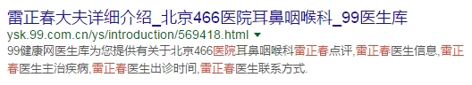
我相信了。
我真傻，真的。
2011年的一天，我上午做完检查，雷正春拿着报告告诉我，我是“鼻中隔偏曲”。
（此处照片：466医院耳鼻咽喉镜检报告单，有“鼻中隔偏曲”字样，右下角有打印的雷正春名字，2011年）
我还记得他说，耳鼻相通，鼻腔就像是下水道。鼻腔堵了，耳朵里的积液出不来，才会耳聋耳鸣。我反驳道，以前的大夫都说我是耳蜗有问题。
他说，他们说的不对。按照我说的来，我能做手术治好你的耳朵。
我当时就同意了。
毕竟，我渴望接受世界的声音。
雷正春行云流水，一口气开出五张单子，上面是术后需要的药品。
（此处照片：466医院公费处方单，诊断结果是“鼻中隔偏曲（鼻中隔弯曲）”，所开药品若干种，都是4天份的，左下角有打印的雷正春名字，药费数百元，2011年）
我真傻，真的。
我竟然没有想过，他还没有做手术，怎么会知道我需要用几天药、用多少药。
我当时只想着，我的耳朵，终于又能听到声音了吧？
当天下午，我就做了手术。
不说手术有多疼了。感兴趣的可以上知乎搜一下“最痛的手术是哪种？”，然后看看那个说“鼻中隔偏曲矫正手术”的人得了多少个赞。
接下来的两天晚上我都没睡觉。两个鼻孔全被棉条堵住，根本无法呼吸。
再接下来的一个多月，我天天待在466医院的治疗室，接受超声雾化、红外消毒、输液等等术后治疗。
用的都是雷正春术前开的药。雷正春料事真如神，不然怎么会知道我能用多少药？
在治疗室里，我和许许多多的人聊过天。
因为输液和红外时间很长，实在没事干，大家只能聊天。
我这才知道，我们得了各种不同的病，有鼻炎，有耳鸣，有咽喉问题，但是经雷正春手的人，竟然做的都是鼻中隔偏曲矫正手术。
我突然想，雷正春不会是专业做鼻中隔手术的人吧？
不然，为什么他给所有人做的手术都一样？
不然，为什么病人需要多少药，他术前就知道？
理疗结束，三个月后，我还是感觉呼吸不畅。
（此处照片：466医院治疗单，“鼻腔粘连松解术”，右下角有打印的雷正春名字，2011年）
我回到466检查，原来是鼻粘膜粘连了。
无他，只是想表示，做这个手术前前后后花了很久，费用也不低。
我只是期盼耳朵变好的一天。
然而，然而。
没过多久，雷正春就跑了，从466离开了。
有那里的医生悄悄告诉我，雷正春是医院从外面请的，最近他跑掉了，不知道在哪。
可恶。
前天，我听说了魏则西的故事。
向他致哀的同时，我想起来，我的耳朵还没有好。
是的，五年过去了，我的耳朵还是耳鸣，还是聋。
而且鼻腔里面多了个疤。
我决定查查雷正春是个什么货色。
我打开了百度，又一次地。不过这次是冲着罪状去的。
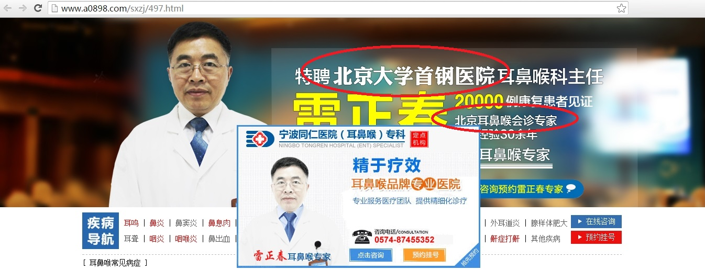
怪哉怪哉！
我还以为，雷正春会因为自责而隐退江湖……不过他怎么跑去宁波了？
我继续翻看。
不查不知道，一查吓一跳。没过几分钟，我就翻出了雷正春的五六个去处。
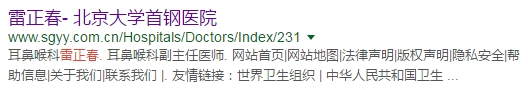
 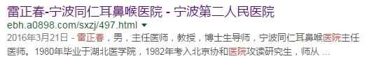
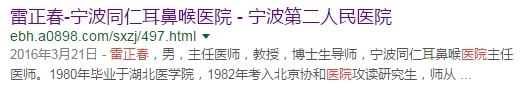它们几乎全是民营医院（宁波同仁）；
挂牌医院（北大首钢医院）（这个医院和北大一点关系也没有）【存疑，看5月5日更新】；
或者是军队、武警的医院（北京466（航医），武警上海，武警福建）。
而且我没有猜错，雷正春其人，大约是全职的鼻中隔矫正医生。
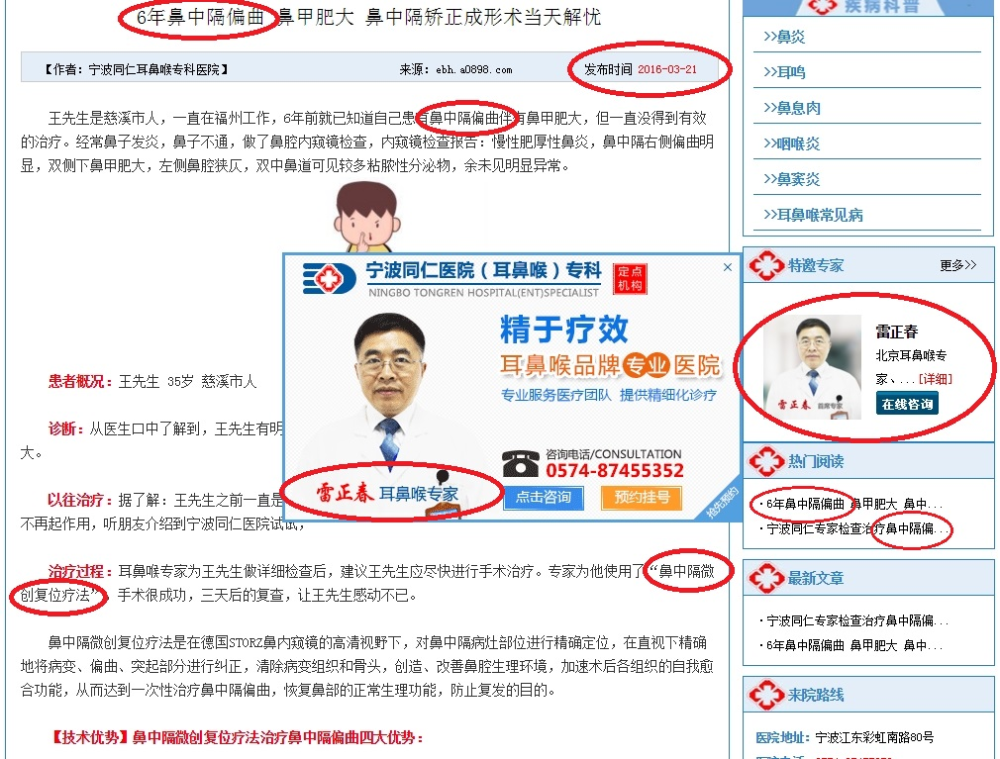
雷正春的简介分明写着，他是1982年考入协和的研究生。
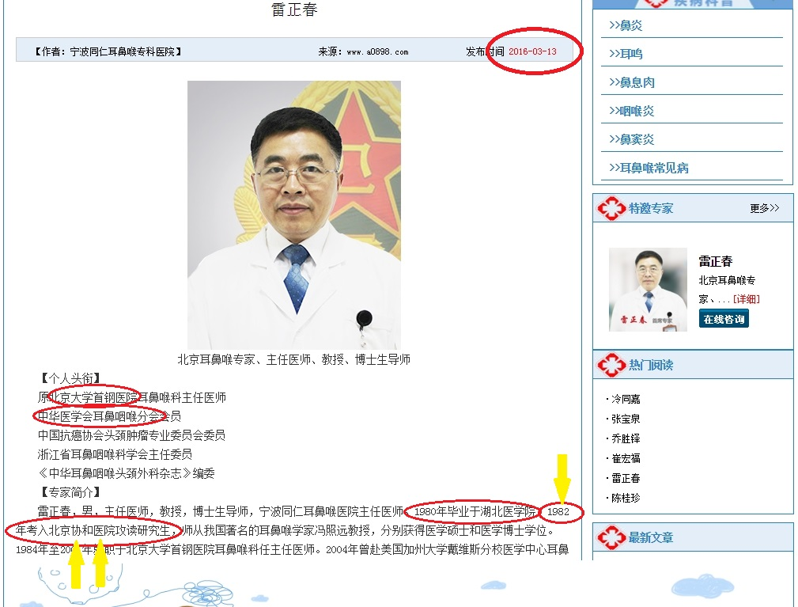
我很疑惑，雷正春身为协和高材生，怎么可能只会鼻中隔手术呢？
我一向是个刨根问底的人。
我去了SinoMed查询。很幸运，它收录了1981年以来协和研究生的毕业论文，正好早于雷正春的入学年份。
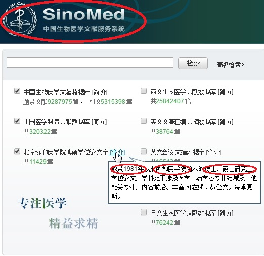
不过搜寻结果是一个红艳艳的“0”。
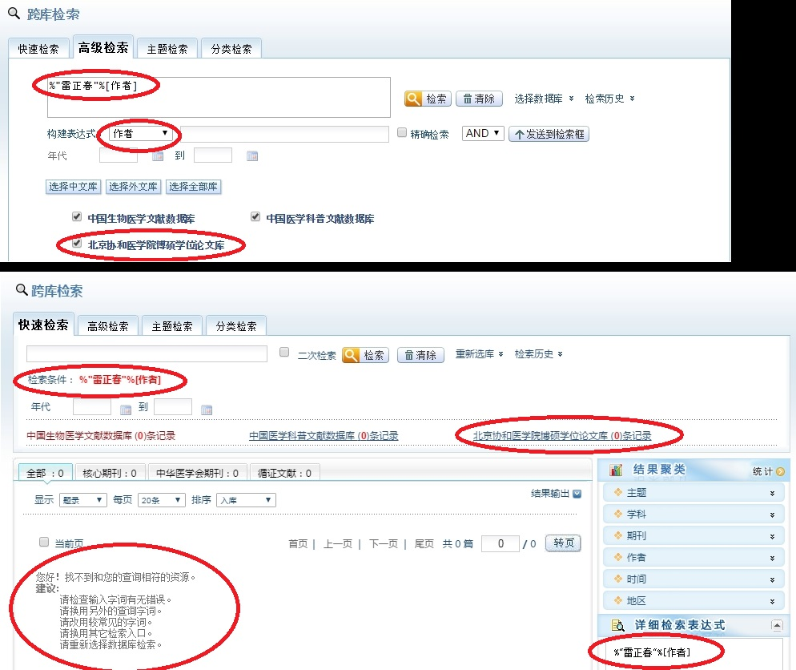
我开始怀疑人生了。
我觉得，SinoMed和协和的权威性远大于百度。
我不得不相信，雷正春的简历是假的。
（补充：中国知网上面，作者=雷正春的结果也是“0”）
听说我的悲惨经历以后，我以前的同学给我发来这两张图片。
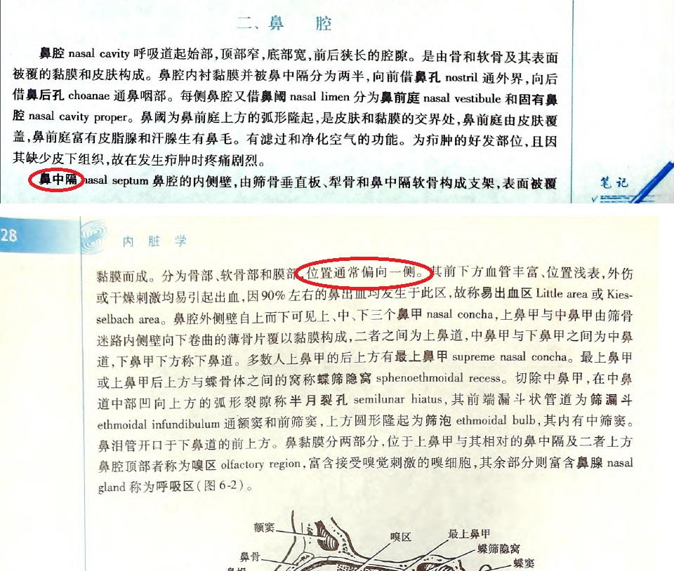
他是学医的，发来的是《系统解剖学》第八版（人民卫生出版社）第127和128页的照片。
我恍然大悟。
这不是很好解释吗？
为什么雷正春要做鼻中隔手术？因为鼻中隔偏曲太普遍，病人们几乎一查一个准，这真是实际意义上的财源滚滚。
而且，术后理疗需要很多药物，我觉得这里面也不简单。
最重要的是，雷正春还在跑。
以受到网民好评的北京名医的身份，跑去上海，浙江，福建。
做着做不完的鼻中隔手术。
身后还有赵正春、钱正春、孙正春、李正春……
我在怀疑，他们是不是被培养出来的“莆田系医生”。
钱骗了不少，一惹事就跑，跑还能跑掉，而且还有下家医院等着要他们。
我不是从医人员，我说不好这个手术值不值得做。
但是我能说的是，某些人，某些医院，某些搜索引擎，某些公司，你们真的很无耻。
谋财事小，害命事大。
而且谋财的证据有了不少，害命的证据也在浮现。
每个人的每个行动都是有意义的。
人在做，天在看。
我等着水落石出的那一天。
尽管我还是听不到水声，但是我看得见。
我能看见，潮水散去，那些石块离开水面，被骄阳炙烤得龟裂。
我们都看得见。
原文在微博，我想把它说出去，让更多人了解这些骗子，不要再上当受骗。
http://weibo.com/p/1001603970818148308118
可惜我没有发声的窗口。
如果实在没人看见这些故事，那就算了吧。
毕竟也不是什么大内幕，只是匆匆一瞥，但是这一眼，我看得真真切切。
没有利益相关，就是一个受骗的病人。
大家随便转载。
==5月5日更新==
关于雷正春的最新发现：
评论里面有人贴了卫计委的网址，我查了一下。
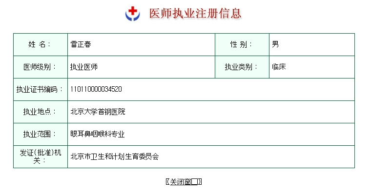
雷正春的确是执业医师，他的执业地点是首钢医院，但是首钢医院耳鼻喉科并无此人。
可以看一眼这里：耳鼻喉科 - 北京大学首钢医院
我不知道他为什么可以四处跑。
关于雷现在所在的“宁波同仁耳鼻喉医院”的最新发现：
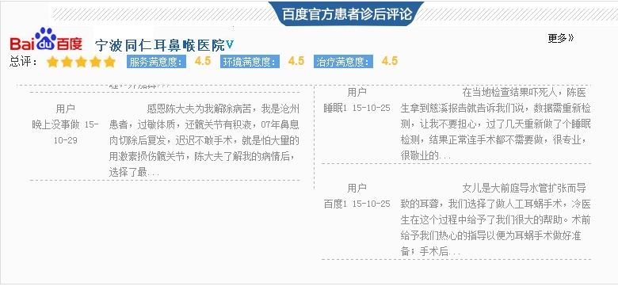Whois查一下这个医院的域名：
“zhuoshiyiliao”，是“卓氏医疗”？有点耳熟啊——
哪些民营医院（包括被承包的公立医院）属于「莆田系」？ - 莆田系医院
看看这个答案的第27条吧，可见宁波同仁耳鼻喉医院也是莆田系无误。
这是“咖喱鸡”的答案，感谢他，无奈在这里at不上。
关于微博链接：
我发现只有登录我自己的号，才能看见那篇文章。
显然，我的那篇被404了，这就是为什么在微博挂了那么久还没人看。
新浪胆小了。
我现在只有知乎。我还会坚守的。
请大家帮忙转载这个页面吧：
从魏则西事件说起，莆田系医疗到底都有哪些内幕？ - 匿名用户的回答
希望它能长寿。
关于北大首钢医院，我不太清楚原委，贴个评论，看起来挺有根据的：
懒惰的一个人
普及一下，挂北大名字的医院基本都是原北京医科大学附属的医院，比如北医三院，北大一院等等，两千年北京医科大学被北大合并，因此这些医院前面都改成北大开头的了。北大首钢医院跟那些不同，是合并后挂到北大系统里，也属于北大系的
关于评论里有人问我这个手术效果如何 / 值不值得做：
抱歉各位，我不了解相关医学知识，而且知乎好像不允许谈论医学问题，所以请面询医生吧。
至少对我，和当时几个病友来说，这个手术除了花了钱、遭了罪以外，毫无效果。
我不知道其他人的情况，不敢断言。
关于为什么不去有名的好医院：
因为真正的好医生的号基本挂不上。
这又涉及到号贩子的问题了，不在此问题讨论范围内。
关于SinoMed：
这个查询，是之前提到的那个学医的同学帮我弄的账户。
如果没有账户，应该没法在SinoMed上面查询。
有条件的人，可以试试在大学和医学院的局域网能不能查。
以上都是本人推测，我举的例子是我和几个病友经历的事情，也许没有普遍性。
至少从卫计委网站上看来，我承认雷正春执业医师的身份。
希望哪天别被反攻，说我诽谤。
多谢评论里对我的关心，但是我不方便解除匿名，也不敢透露身份。
还是那句话，本答案随便转载，不要断章取义就行。
谢谢大家捧场，希望这个帖子能帮到更多人。
==5月6日更新==
抱歉各位，删了几条评论。
请大家评论的时候一定不要提到政治敏感的东西。
请大家评论的时候一定不要提到政治敏感的东西。
请大家评论的时候一定不要提到政治敏感的东西。
不是我胆小，毕竟树大招风，到时候知乎因为上级压力而不得不删帖，也不是没有可能，那样的话，某些医生的行径就又不为人知了。
包括用一些极端手法整医生之类的，这样的医生多到整不过来，动用个人力量骚扰，反倒容易引火烧身。大局能够有根本性的改变才好。
我答这个答案，是为了让后人不要上当受骗，所以当然希望这个答案能长久保留。
非常感谢各位的支持，各位的转载转述都有帮助，一起继续努力维护吧。
衷心谢谢大家。
==5月13日更新==
看到有不少人说知乎链接失效了，我不知道是不是浏览器的问题，换浏览器看看。
再不行的话，试试这个链接：莆田系医院都有哪些内幕？ - 魏则西事件
另外，百度把雷正春的百科词条删除了。
可笑极了，难道我之前没截屏留证吗？
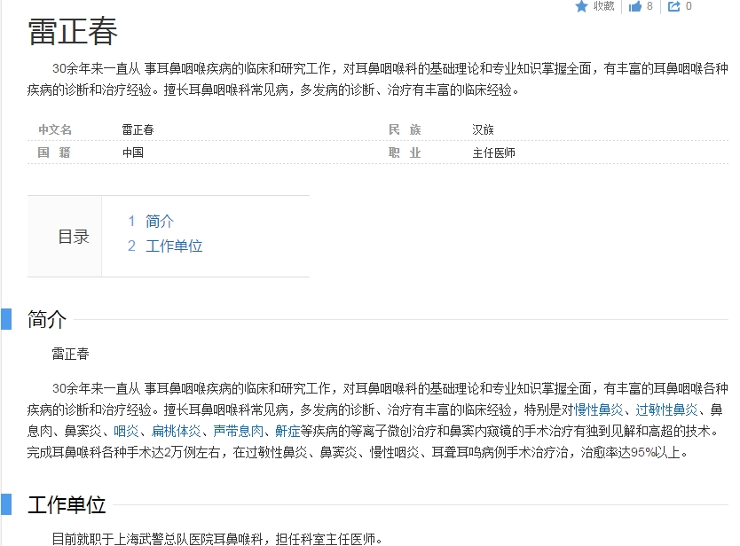下面是词条修改者：
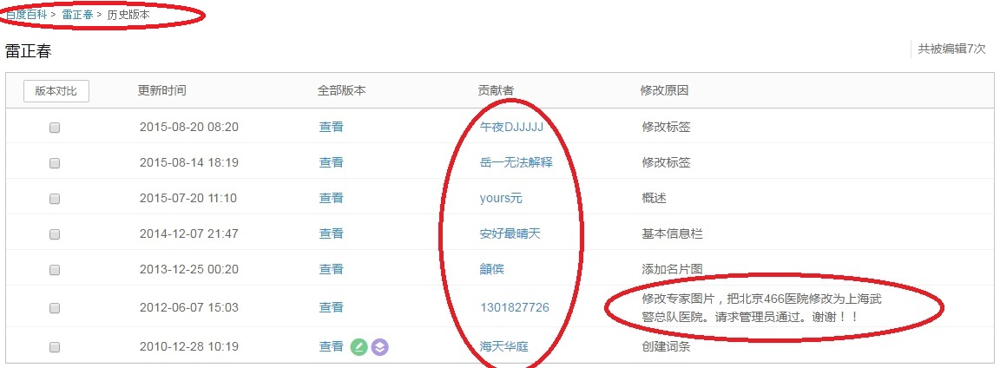就像评论里几个人说过的，点进去看创建者的出生地和他之前修改的词条：
还有一个人：
以及活生生的“越描越黑”：
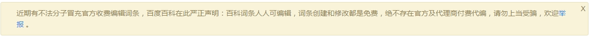
不做评论，某些人，某些医院，某些搜索引擎，某些公司，好自为之吧。
最后，最近看到陈仲伟医生被杀的事情，很震惊。
可叹好医生蒙受冤屈，骗子医生逍遥法外。
1.关于莆田系医院
相信目前应该有很多人已经知道，莆田系医院主要指莆田及周边地区人在全国各地经营的民营私立医院，以前主要多为妇科医院、男科医院、不孕不育医院、皮肤科医院、精神科医院等，现在他们又将“魔爪”伸向了肿瘤科等等。
2.关于莆田系医院的宣传
莆田系医院大多会通过建立网站的形式进行宣传，然后结合百度竞价进行推广，还有一些通过报纸进行宣传，但他们有很多不是通过报纸广告的形式进行宣传，而是通过新闻的形式出现在报纸上，比如某某疗法救了一家人等等，由于是新闻的形式，所以很难被鉴别。
莆田系医疗的网站宣传系统主要分为以下几个部门：网站编辑部、竞价推广部、客服部、网站后台部、SEO部等。
网站编辑部，就是网站内容的生产部门，负责从其他网站上摘抄各种文章、撰写原创软文、策划网站专题等。
竞价推广部，就是负责网站竞价推广的，这里要说，竞价不止做百度的，还会做其他网站以及手机网站的。
客服部，网站上一般都会留电话和qq，客服部就是负责接听与回答来电话或qq咨询的病人。
网站后台部，就是负责网站建设、维护、设计、美工等。
SEO部，就是通过seo的方式将网站信息发布到博客、论坛等各种非官方网站的渠道，使消息覆盖面更广。所以这里要提醒大家的是，不止要警惕百度推广，也要警惕你在论坛上、博客上看到的医疗信息。
3.关于网站上内容的真假
我可以负责任的告诉你，基本上都是假的。
我在莆田系医院曾经的岗位就是网站策划和软文撰写。上面会对某种疾病包装某个疗法，但这个疗法的名称可能是从外国疗法名称中模仿来的，比如这次魏则西事件中的“生物免疫疗法”，也有可能是其他疗法名称拼拼凑凑来的，还有可能根本就是一个人为编的疗法名称，只是这个名称会听上去很高大上而已。
至于疗法的效果，基本上也都是套话，这些话可以用在任何疗法的身上，总之就是高效快速等等，但其实并不一定是这个疗法的真实效果。我们网站编辑人员也不需要去真的了解这个疗法的效用，甚至我们自己都不太明白这个疗法到底是什么，我们就知道说套话就可以了。
至于网站上的案例，基本上也都是编的，我曾经就做过编故事的工作，为每一个疗法编一个治愈的案例，所以你看到的治愈案例，基本上都是假的。
至于治愈的效果与案例，好吧，基本上也都是假的，比如有的写已有上千人通过这一疗法获得救助，但这个“上千人”只是我们随便说的一个数字而已。
至于资质与奖牌，很多网站会公布自己获得了多少业界奖项，但是这些奖项有可能就是莆田系医疗系统自己设置的奖项，换言之没有什么说服力，只要敢做，ps一个奖状、奖项都可以。
总之，网站上的内容基本都靠编。
4.关于莆田系医疗的疗效
毕竟我不懂医，这个我不能说疗效真假或好坏。
不可否认的是，莆田系医院还是可以治病的。
但是可以肯定的是，他们大都会过分夸大你的疾病，然后向你介绍看似高端的疗法，以此向你收取高额的费用，去治疗你可能在其他医院几百块钱就能治好的疾病。病能治好吗？能，但你在心灵上受到了更多摧残，经济上收到了更多损失。
而且更为可怕的是，他们甚至可能去做无中生有的事情，也就是你明明没有病，而对你说你有病，然后对你进行强行治疗。
你会说天啊，那不是太可怕了吗？
对，就是那么可怕。
这也就是为什么这种医院一般都会宣传一个非常便宜的检查套餐，因为他们就是要忽悠你去医院做检查，做过检查以后就告诉你有什么什么病，然后开始对你“开刀”，你也就从这里开始上套了。
举个最简单的例子，女性宫颈糜烂，目前国际上已经公开说明这不算疾病，如不严重基本上无需治疗。但这些医院不会这么说，如果你有轻度宫颈糜烂，医院会告诉你得了很严重的病，如不赶紧治疗，很有可能癌变，当然，你在恐慌之下，肯定会选择治疗，然后他们再用已经华丽包装过的但其实非常普通的疗法去为你治疗，但实际上你或许完全不用遭这个罪。
5.关于如何鉴别莆田系医院等私立医院
之前有看到有人列举医院名称，但列举真的是列举不过来的，因为这类医院实在是太多太多了，我只说一些通用的鉴别方法。
首先，最重要的一点就是，永远不要去相信百度搜索词条中后缀“推广”字样的信息，这些一定都是私立医院
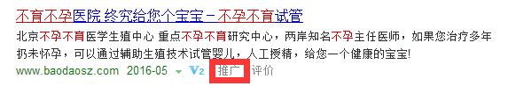第二，一般医院网站做的特别华丽的，信息特别全面丰富的，基本上都是私立医院，尤其是你在网站上停留几秒钟以后，就会弹窗咨询电话或qq咨询信息的，那一定是私立医院。
第三，如果你在其他医疗资讯网站、论坛、贴吧、博客上搜索相关信息时，如果信息中出现“先签约后治疗”、“包干治疗”、“治不好退款”、“保障治愈”等等字样，那一定是私立医院，如果它留了电话或qq咨询信息，也基本上可以确定是私立医院，公立医院基本上是不会在各个网站到处留咨询电话的。
第四，如果你是在报纸上看到一些医疗信息，广告版面的别信，这个就不说了，新闻的话，如果提到的疗法名称特别华丽听上去特别高大上，你也需要特别重视，比如什么生物免疫疗法、什么自凝光子术、什么活化因子术，你听都听不懂的，八成都是来自于私立医院的。公立医院的疗法名称大都比较简单，没有那么复杂。
第五，有人说那我去公立医院好吧，那我就要提醒你，一定要警惕一些武警医院、解放军医院等，因为这些医院的男科、妇科、不孕不育科、精神科基本上都已外包给私立医院去做。那你会问那我怎么知道它是不是外包出去了呢？有一个很简单的办法，把医院名称和科室打在百度上搜索，如果出来的是该医院的“推广”信息，那肯定是外包了。
6.那有病该去哪看？
去当地三甲医院看最保险。如果你是外地人，那就去问本地人当地有哪些三甲医院，不要自己去网络上搜索。
永远不要对网络上的信息无选择性的相信，有病了都着急，但也千万别乱投医，那样有可能让你拖延治疗时间、浪费更多资金，都是救命钱，花在刀刃上。
我暂时想到的就是这些，希望对你们有所帮助，如果有其他问题可以问，我知道的我都会说。
愿这个世上再没有下一个魏则西，愿骗人的私立医院终有一日在中国灭亡。
——————————————————————————
7.关于地推
下面评论里有说到地推，那我就再说下地推吧，毕竟我之前所在的是网络推广部门，地推了解的不是太多
目前私立医院地推主要是四种，一种是发杂志，上面有疗法介绍、医院介绍、案例等，一种是硬卡片，类似于银行卡那种材质的卡片，上面是医院电话、地址，一种是免费发餐巾纸，上面也是医院地址和电话，这三种一般都在超市门口发，还有一种就是公交广告，鉴别方法还是一样的，凡是写了“签约治疗”“一次治愈”“痛苦少疗效好”什么的，统统不要信，公立医院是不会去做这种地推广告的。
——————————————————————————
8.关于专家
底下看到有人说到专家，那我就再说一下有关专家的事情吧
看到下面的评论，抱歉最开始对医生等级说法有误，那我们就不说莆田系医院的医生等级和医资水平，毕竟我不懂医，不是太了解医生的医疗水平这块。
我只说网站上有关专家的信息吧，如果网站上的弹窗显示的是“点击就可以立即与医生对话”或者“点击就可以在线咨询专家”，那么放心，电脑对面跟你对话的肯定不是医生，只是一个客服人员而已，他们没有专业的医学知识，仅有的医学知识也都是从网上得知以及工作经验得来的，并不能给予正确的医疗信息，所以不要轻信那些网站上所谓的“专家”，他们只是营销人员而已。
——————————————————————————
有人问可不可以转，统一回答可以转，希望更多人看到
 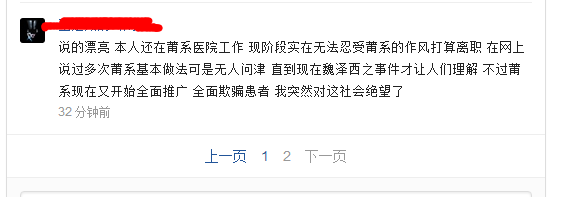
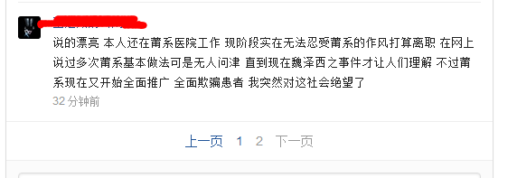最新更文：已翻墙，以后再也不使用百度。
太后造反这种事还能洗白吗
罚酒三杯，真的不是来搞笑的吗？
利益面前唯实力
希望大家能逐个击破这些大老虎。
对莆田系所作所为无感的可以这样理解：
假如你一觉醒来，发现福建沙县小吃和兰州牛肉拉面以及黄焖鸡米饭都被举报含有大量致癌物质——会是一种什么样的心情？
 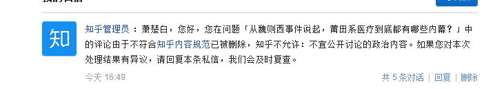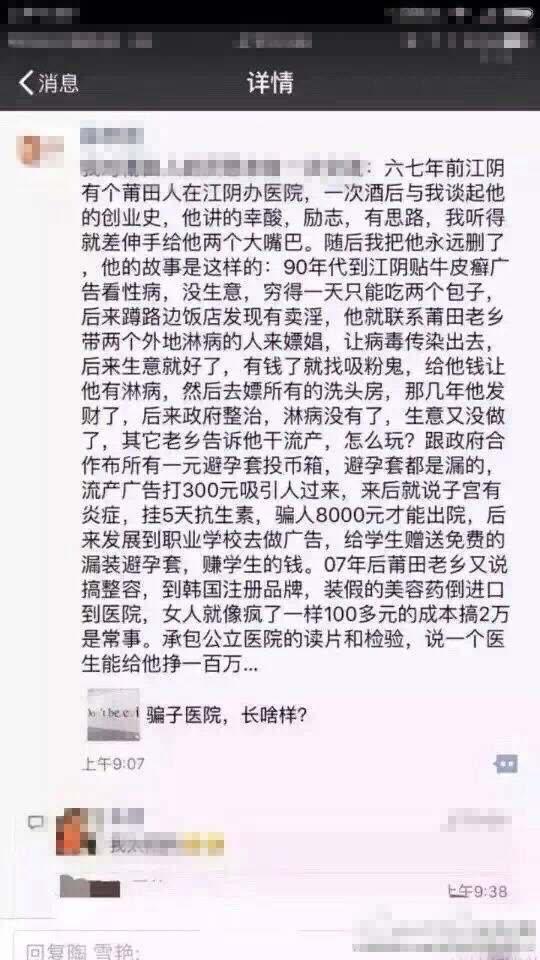
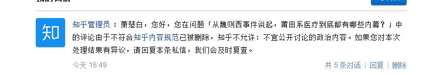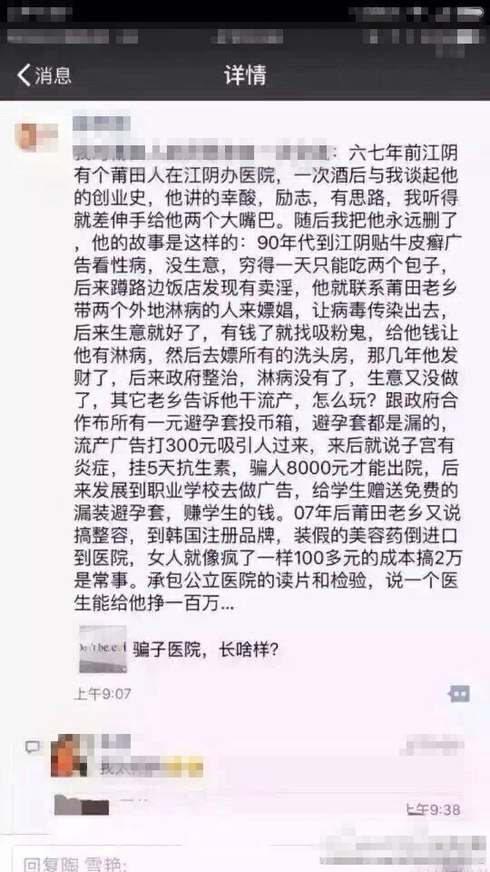我很好奇好医生是什么样的，以下是我在莆田系医院推广机构实习的经历！
（上海市曹杨路地铁站长风大厦恒奕伟业营销策划公司——原邦泰医疗策划推广）
实名回答，怒揭莆田系真相！——他们从来没考虑过重新做人！
视频无字幕版已经发布：
番外版|楚白在莆田系机构的经历
统一回复：
朋友圈微博转发十分欢迎，不署名也没关系。
发布在公众号或其他渠道的请发个回链给我，好确认没有恶意修改。
1.文中第二个链接已经说明了我早就发文说过这件事，只是当时没人在意。
同时，所有的黑材料我去年二月份就已经发表了，不存在我转发别人的内容，如果可能，他们转发了我的材料的可能性更大。
 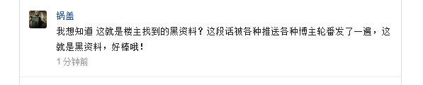2.麻烦水军洗地的时候专业点，本文没有任何地域歧视的意思！本文没有任何地域歧视的意思！本文没有任何地域歧视的意思！
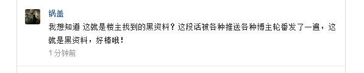2.麻烦水军洗地的时候专业点，本文没有任何地域歧视的意思！本文没有任何地域歧视的意思！本文没有任何地域歧视的意思！利欲不熄 莆田不死
本文为订阅号部分内容，全文请点击上方链接！
一
听到魏则西的名字，有一段时间了，但是一直没去看看是什么新闻，直到看到莆田系三个字跟魏则西绑在一起。
一年零三个月以前，楚白刚刚考完驾照，在上海实习，找的第一份工作就是在一家莆田系医院的宣传机构里做文案。
大家知道，这份工作我只做了两个星期就离职了，并且先后写了两篇文章揭秘了民营医院的黑幕，但很遗憾，我写得不够早，推广得也不够广泛！
二
当时我进入的部门是精神疾病医院宣传类，负责宣传一家公司，叫做南京脑康，专治脑瘫和癫痫。大家也注意到了，我没有说这是医院，因为事实上，莆田系完美地侮辱了医院这样一个神圣的名词。
但是大家一定要注意到的是，它们的宣传机构已经有了系统完整的分工，各个宣传小组按照疾病所属科目进行分组并负责总公司旗下的主治专治医院的宣传。
同时，一个小组内，文案、美工、网页制作、搜索和优化全是专人专岗负责的，而且还有专门的客服和市场推广部门，这也是我最开始怀疑他们的地方。一家医院的客服为什么会被负责宣传的公司给外包了呢？
三
我做了一个礼拜后，原先在宣传的专家突然就换人了，换成了另一位专家。我以为是原先的专家跳槽了或者离职了，但是我发现专家换人后，疗法、简介、机械什么的都没有一点更换，换句话说，只是换了专家的名字和部分简历，其余的都是一字不动。于是我又百度了这几位专家的名字，发现有一部分根本没有资料。
这时我又听说了一件事，我们将在下个月（2015年3月）在北京人民大会堂举办一个医疗讲座，这件事让我觉得我们是专业的，不然怎么可能进人民大会堂那样神圣的地方呢？
结果很遗憾，上面告诉我，届时到会的将全是集团内部的人。这时我才知道，原来我们只是花钱租了大会堂，然后自编自导自演了这样一场大会！
那时我就咨询了我的两位前辈:这些专家和疗法到底是真的还是假的？他们说:你管他呢，现在打广告的有几个是真的？人家给你钱，你就帮人家做好宣传就成了，要做好你份内的事。
我当时没说话，但是心里想:我是职员，但更是一个人，总得先做好“人事”。
那天中午吃完饭，我心里一直不舒服，就随意翻查电脑里的文件，就是那么巧，我看到了前一位员工留在盘里的资料——一份揭露我所在的公司、我所在的医疗集团乃至百分之八十以上的民营医院的真相的资料。
四
那是一份txt文档，全部是从不同的渠道搜集的文字，上下文很不连贯，可见那位同事并没有修改过文字。里面的内容大致如下:
上世纪末，福建莆田东门有一批游方郎中，就是俗称的赤脚医生，他们通过帮人医治性病获取收入，虽然他们事实上根本治不好这种病，或者说有一些很好治的性病他们也会故意拖下去！
再后来他们还兼职打胎和医疗艾滋病。通过这三种工作，他们收入了创业的第一桶金，并开起了小诊所和小医院，但那时他们还没有那样一个机会上位。
但是医疗行业的改革春风给了他们一个天赐良机，就是国家医院的科室承包政策，也就是说，有些医院觉得自己的耳鼻喉科，眼科之类的科目赚不到钱，打算把这些科室外包了。
这帮资本家们敏锐嗅到了其中的机会，纷纷承包这些被医院弃如敝屣的科室，然后就可以打出什么“某某医院耳鼻喉专科”之类鱼目混珠的旗帜，就这样，他们获得了发展的良机，并且崛起了！
这其中最出名的有詹黄陈林四大家族，四大家族成立了无数不同名目的医院，比如九龙男科、五洲男科、玫瑰女子、南京脑康、某某不孕不育、解放军某某专科医院等等。但是对于大病，他们并没有什么真正有效的医疗手段，他们只会圈钱。
区分它们的方法很简单：
1. 所有承诺百分之九十以上治愈率的，全部都是假的。
2.在百度推广上打广告宣传疗法的！（你见过正规大医院打广告吗？）
3.主管姓氏是詹皇陈林，并且带有明显的莆田口音的医院！
4.上述提到的那种**专科、**男科、**不孕不育、**整形整容、**人流！
档案最后说了几个小段子，真人真事；
一名男子去著名的男科医院割包皮，结果医生用手术镊把他的包皮捣烂，然后给他看，说他下面已经烂了，需要入院治疗！
一名实习生进入相关医院实习三天，选择离职，因为他发现医生检查病人的时候根本没有打开诊疗仪器！化验单上的结果是医生自己随手填的！
医生开的收费单据上，用字母代替数字，医生想给你开多少钱的药就给你开多少钱的药！
许多病人在民营医院治病被耽误，最后转送大医院治疗，但是已经回天乏术，但是却让大医院背了锅！
看完这些之后，我没有果断选择离职，因为我犹豫了。如果你实习过，你应该明白，找到一份工作让你实习也是蛮不容易的！
但是那天下午的培训会上，主持人说：癫痫是无法用我们这种方法治疗好的（而且所谓的疗法早就已经被禁用了），所有康复的癫痫都是自愈的，而且谁也不能保证会不会复发！
于是我就问：那我们这不是骗病人的钱吗？
没关系，病人都有钱！
这句话说出口，我就决定离开了，因为我就算找不到工作饿死了，我也不能接受这种骗人的工作！
【感谢 @小仓鼠 的纠正，癫痫有一定数量是可以治愈的！看来这个主持人也不专业啊！】，五
在那之后我通过各种不同的渠道发布了文章揭露他们，但是很遗憾，我说过，他们有优化团队，每天就是各种网站去扑灭对他们不利的新闻，面对这样的组织与机构，个人是无能为力的！
所以我要感谢魏则西，他用生命为我们打开了一丝缝隙！在他背后是千千万万个因为民营医院误诊导致死亡或者终身残疾的病患，是千千万万个为了治病而陷入困境的家庭——而莆田系的四大天王还在安然地出席各种场合，享受着美酒华服，别墅游艇！
他们就是这个时代的马步芳！
那时我发表了民营医院揭秘的文章以后，就想着做一期视频揭秘他们。
但是因为工作比较忙，手头上的证据又都是单向的，没有什么具有公信力的证据，这件事情就一拖再拖，直到今天，我觉得这件事不能再拖了！
新视频会争取在明天上线，让更多人知道这件事情！
六
至于百度——他不过是那个为虎作伥的伥的罢了。百度是有原罪的——这就是利欲，国家也应该承认，自己是有原罪的！这两者没有动作，民营医院就不会倒下！（假设我现在是莆田系帮主，我至少有四种法子重新做起来！）
因为我们把经济收入作为审核标准，所以我们才会不知廉耻的为了钱不择手段！才会以一个人的经济地位而不是个人行为作为评价的标准，很多人在明知四大家族所作所为后，还会说：那有什么，人家现在就是很成功啊！
换言之，只要我们仍然把经济收入看成衡量一个人成功与否的标准，这种事情就不会断绝！
我不是说我们不该爱钱，楚白也爱钱，谁能不爱钱呢？但是孔老夫子也说过：不义而富且贵，于我如浮云！我们虽然做不到不为五斗米折腰，但是至少不能为五斗米而昧着良心！
关于莆田系医院的名称地址需求。
求莆田系医院的详细名称地址？ - 萧楚白的回答————————————
说个我亲身经历的事，顺便展示一个莆田系逗比。
2015年的某天，岳父母去北京同仁医院复查，岳母之前做过眼角膜移植手术，有排异反应，在去医院的地铁上，一个妇女找他们搭话，问东问西，妇女说自己有个亲戚也是同样的病，在北京某中医院看好了，自己这次就是去开药的，可以带我岳父母一同去……看到这里大家都知道了，这是遇到医托了。岳父母看那个妇女很实在，就跟着那个妇女去了……我得知情况时他们老两口已经开完药回家了。我告诉他们上当了，开车回家带上他们，再次去了这家医院，岳父母告诉我，到医院没有做任何检查，医生只是简单的问诊后，就开了两大垃圾袋（确实用黑色垃圾袋装的）中药，花了几千元（记不清具体金额了，反正是他们身上带着的所有现金，因为在开药时医生问他们带了多少钱，结账时发现钱刚好够用，还剩了20块钱，我告诉岳父那是骗子给你们剩的路费）。
这个医院叫“北京环球中医医院”，在昌平区立汤路附近，下图就是医院的门脸

我去的目的是为了把药退掉，被骗钱没什么，主要是老人坚信医院不是骗子，如果不把药退掉，他们肯定会把药吃掉，老人还有其他的慢性病，把这乱七八糟的药吃了后果不堪设想……
进医院之前，我也心中打鼓，做好了吵一架甚至打一架的准备，打开手机录音就进了医院……
我们进去时医院工作人员很警觉，不问我看什么病，都问我是干什么的？我想是因为这个医院很少有年轻人进来吧。
岳父母直接把我带到那个医生的办公室，我很平静的和医生说不想吃这个药，给我退了……
医生的反应出乎我意料，他说你去收费处直接退了吧，然后我就很顺利的把药退了，把钱拿回来了，他们甚至都没有打开垃圾袋核对药的数量……憋着吵架的我就好像一拳打到了棉花垛上……
我明白了这些骗子医院为什么能在号称首善之区的帝都长期存活，他们根本不和你冲突，不给你反击的机会，有和你扯皮的时间，他能去骗很多人了……
我给岳父母分析了很多骗子的漏洞以让他们相信那是骗子：
1.岳母做的是眼角膜移植手术，这个手术不是那么常见，在地铁里一个搭讪的就恰巧家人也做过，这个也太巧了
2.就算我大中医历史悠久，包治百病，眼角膜移植排异怎么开药方，哪本中医古籍里记载过？
3.医生没有做任何检查，甚至连眼睛都没看，就能开出药来
4.诊疗开药的票据都不是北京市统一式样的票据
5.取药时那两大垃圾袋药是已经装好的……而且药房里还摆着好多装好的垃圾袋……很明显谁去看病，开的药都是一样的……
6.退药时不问原因，不检查药品……
总之破绽一大堆，他们的模式也只是为了骗老人，所以没那么严谨。
===============================================================
事后我调查了这家“北京环球中医医院”，这是一家合法医院（就像百度委屈的说法，证照一切合规），全称是北京环球实业股份有限公司中医医院，隶属于北京环球集团，也是个正规企业，法人代表（谢知友指正）还是那啥委员。
但是我查到了一条12年的新闻：
中国新闻网：2012-11-15，中新网从北京佳士凯国际拍卖公司了解到,北京环球中医医院法人代表简政荣因要移居国外，欲通过拍卖形式转让北京环球中医医院的经营权…………中美创新联合国际疑难病研究院院长陈中华得知现行法规禁止医院转让经营权后，与北京环球中医医院法人代表简政荣提出进行医学技术合作，中美创新联合国际疑难病研究院提供发明专利和医学专家，把中美创新联合国际疑难病研究院医学专家的执业医师证注册到北京环球中医医院，定期在北京环球中医医院坐诊，经协商，中美创新联合国际疑难病研究院与北京环球中医医院于2013年4月18曰签订了医学技术合作协议。近日，北京环球中医医院已通过北京市社保局申请北京市城镇基本医疗保险定点服务资质。
也就是说实际经营医院的是这个“中美创新联合国际疑难病研究院”，它的工商信息如下：
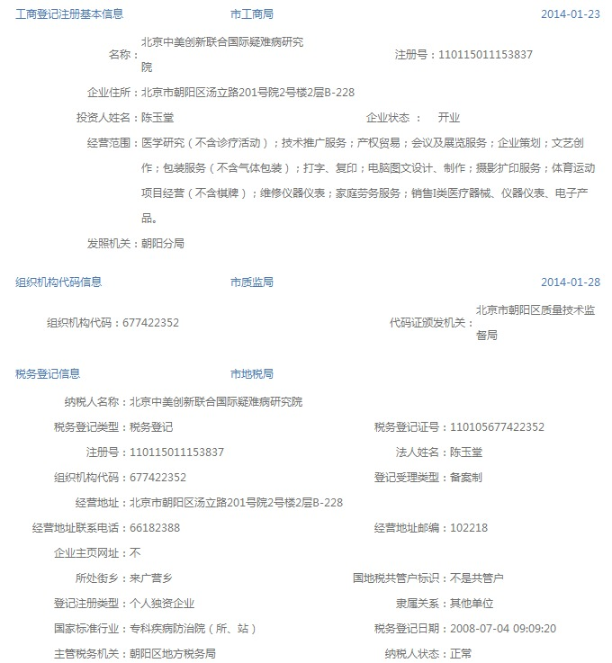
这个法人陈玉堂应该就是新闻中提到的院长陈中华。
继续查到他们的网站(
http://www.66182388.com/
中国国际医药研究院
http://www.13683233288.com/
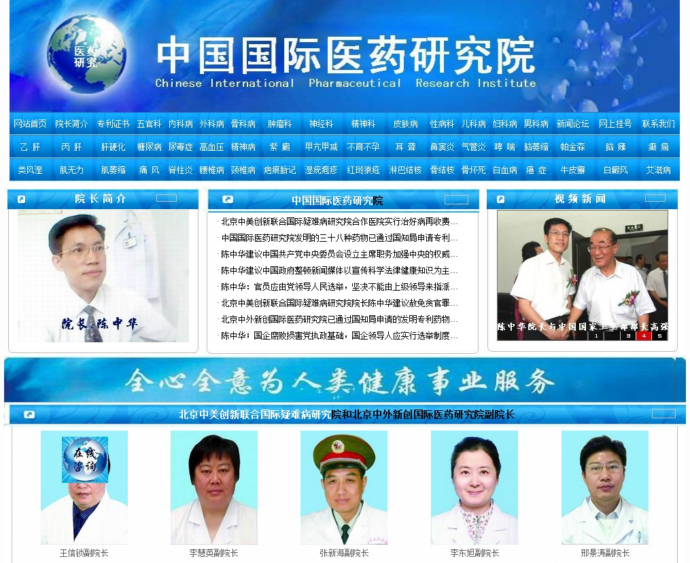
院长是陈中华，来，欣赏一下陈院长在网站晒的简历和合影：
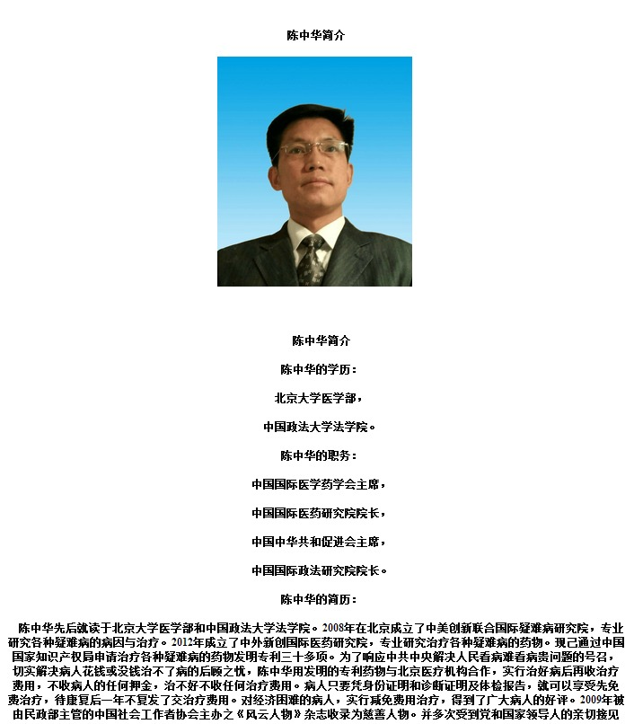
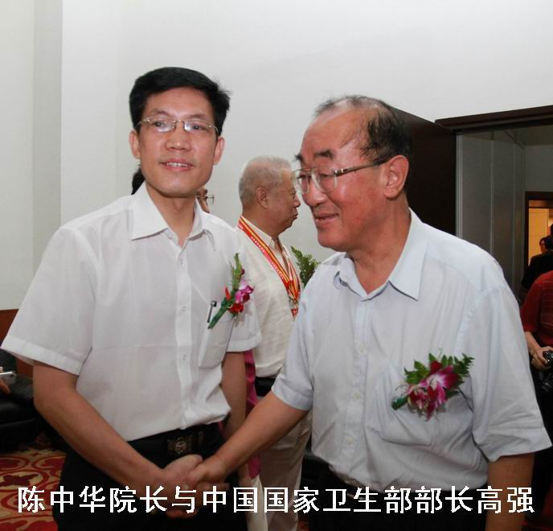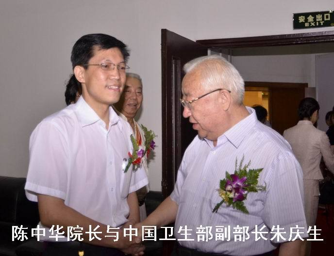
这个陈中华是不是莆田系我不知道，可是，是不是又有什么区别呢？莆田系发展到现在已经成为了一个行业的代称。
对了，陈院长还是法学毕业呢，还是个愤青呢，自称中国政法研究院的院长，看来莆田系控制各个经济行业后，要进军政界了……
看看下面这个网站：
中国国际政法研究院
这和那个疑难杂症研究院的网站一个模版啊！看来在中国法治问题也是个疑难杂症啊……
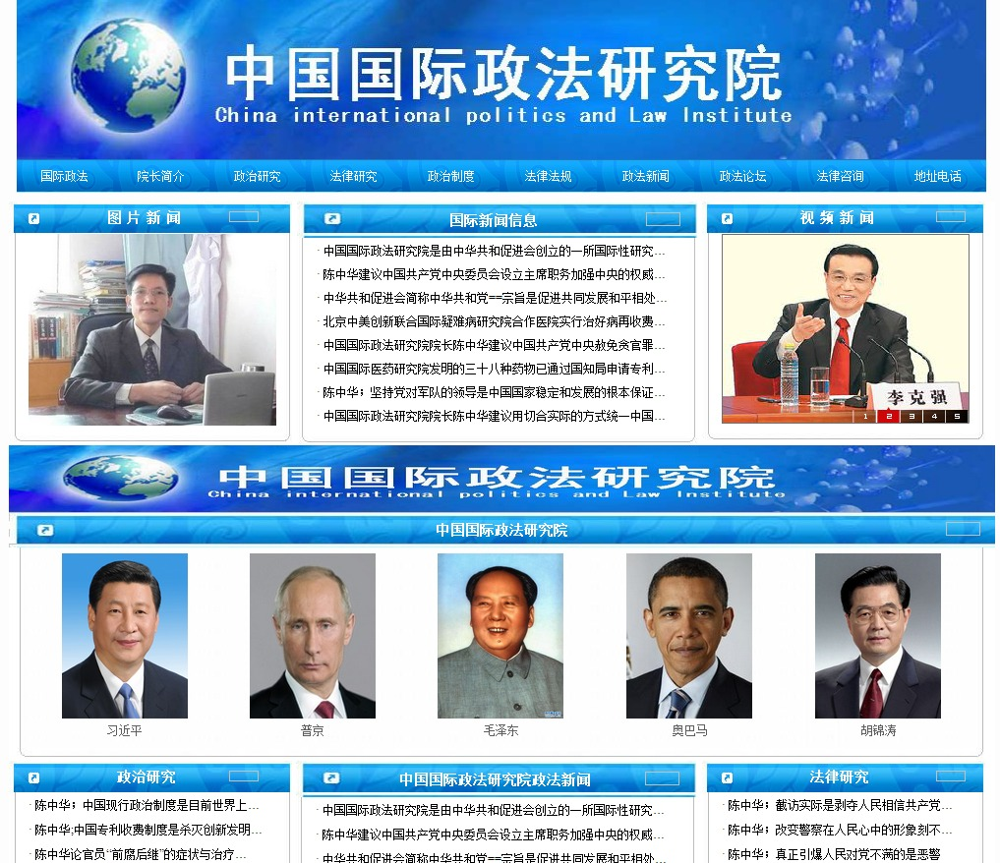
陈院长，那个啥啥党是咋回事？你要造反吗？
陈院长还想称帝
 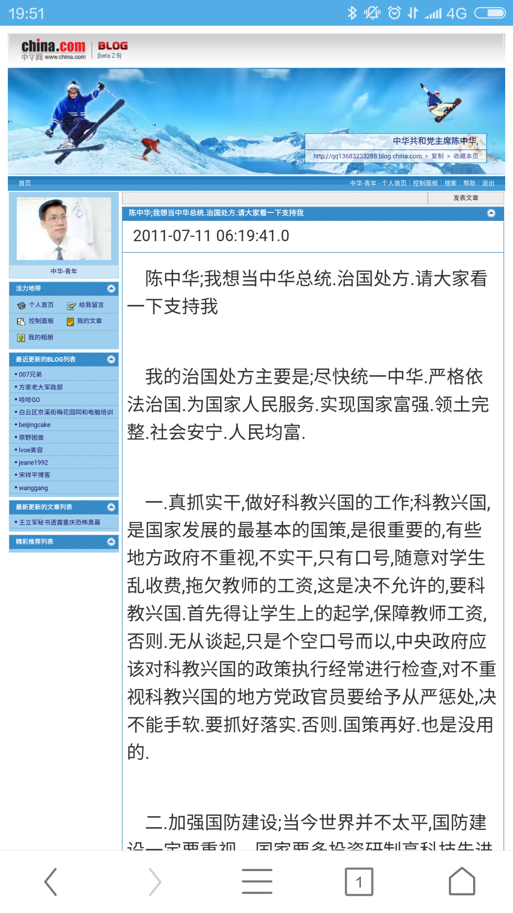陈院长有一颗爱国赤子心
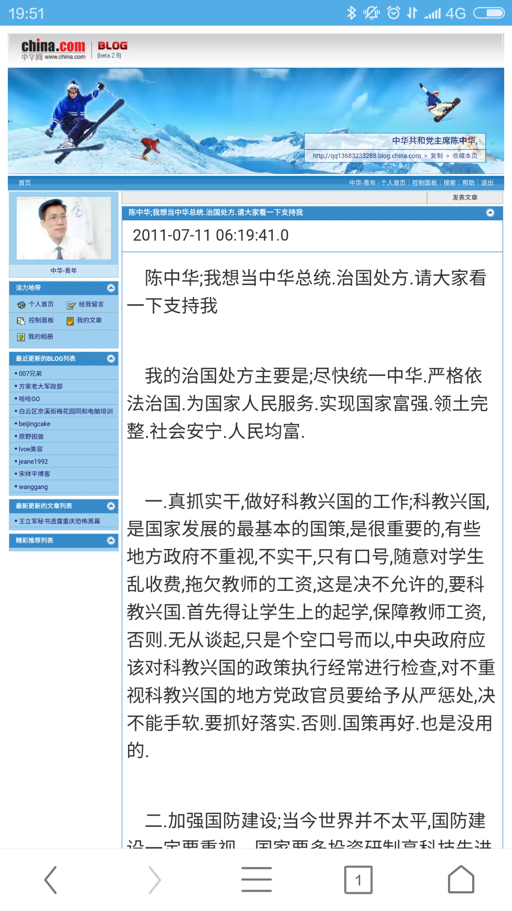陈院长有一颗爱国赤子心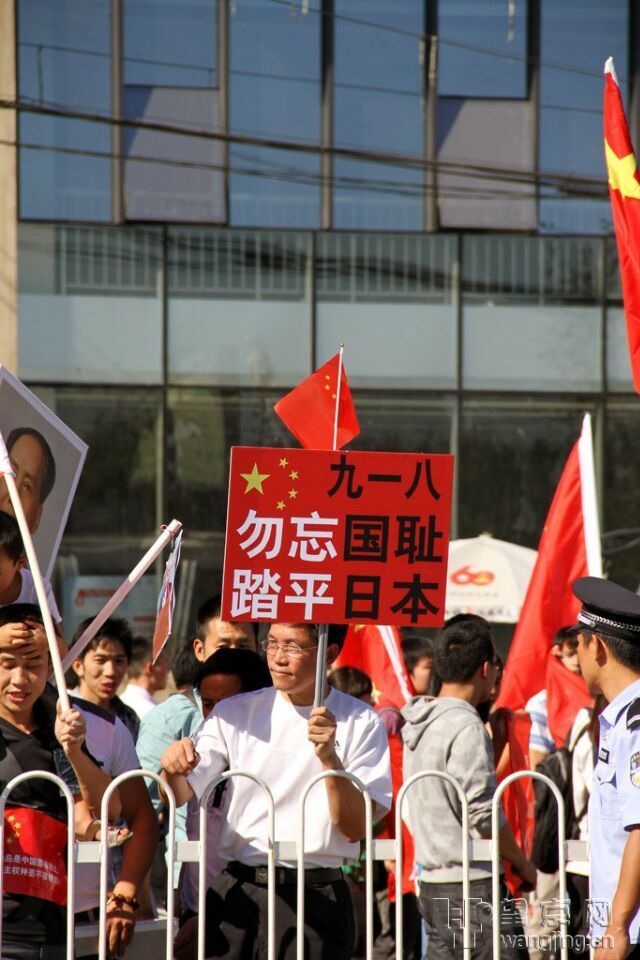
看看陈院长前两天关于魏则西事件的一篇大作（发表在凯迪社区）：
http://club.kdnet.net/dispbbs.asp?boardid=1&id=11594764

还有一篇陈院长诅咒李彦宏的大作，看来陈院长没赚到什么钱，对百度恨之入骨啊
http://m.kdnet.net/topic-10953476.html

综上所述，如果陈院长是莆田系，也是莆田系里的逗比……
===============================
2016.5.6更新
这个骗子现在现在又有新的合作医院了（他的研究院没有诊治资质，所以要依附在合作医院身上开展骗人活动）
新合作医院叫北京新华联合医院。
 下面的网址有陈院长最全的一篇自我介绍：http://blog.sina.cn/dpool/blog/s/blog_891d21cb0102vvbo.html?vt=4
下面的网址有陈院长最全的一篇自我介绍：http://blog.sina.cn/dpool/blog/s/blog_891d21cb0102vvbo.html?vt=4————————————————
另外，在莆田本地论坛上看到这样一篇帖子，莆田的本地人都不信任自己人，是不是感觉很悲哀？

今天我发现有人竟然说，魏则西是太不小心，偏听偏信才上当。
我且问你，如果你面对下面这位医生，你会怀疑吗？
武警北京总队第二医院肿瘤生物中心主治医生李志亮（别名李鹏甫），个人荣誉：
- 中国肿瘤生物治疗协会常务副会长
- 中央电视台《朝闻天下》采访嘉宾
- 中央电视台《新闻直播间》采访嘉宾
- 中央2台《财经时讯》采访专家
- 中央科教频道《科技之光》特邀专家
- 河南卫视《国医养生堂》栏目嘉宾
- 云南卫视《养生汇》栏目嘉宾
- 北京电视台《生活实验室》栏目嘉宾
- 中华医学会肿瘤专业委员会会员
- 中国抗癌协会临床肿瘤学协作专业委员会(CSCO)会员
- 国际细胞治疗协会(ISCT)会员
- 中国生物工程协会(CSBT)会员
一个莆田系医生，用着被外国淘汰的技术，却可以获得如此多的荣誉，里边的内幕作为一个小老百姓不敢妄言，水有多深自行体会。只求各位明白，魏则西当时求医的时候已经足够谨慎，只是骗子的势力和实力太强大了。
——17年前全国媒体就对莆田系围剿
——政府承诺“严厉整顿”
——17年后的今天……
莆田系的历史可以追溯到30多年前：
80年代，一个姓占的秀屿镇马厂村人，他曾在莆田市皮肤病医院呆过，到北方各省行医，几年间就赚得盆满钵满，在村里盖起了气派的楼房。在他的带领下，亲戚、邻居、同乡纷纷出动，很快形成了数千人的游医队伍
90年代，队伍达到两万人，除了西藏、台湾，莆田系已经遍布全国
1998年左右，全国媒体围剿莆田系，政府承诺“严厉整顿”
2006年左右，全国媒体再次围剿莆田系，政府承诺“严厉整顿”
2016年的今天，莆田系已经垄断民营医疗行业，全国11000家民营医疗机构，莆田系超过8000家
从1998年政府第一次许下承诺到今天，17年过去了。
这里我发三篇《南方周末》1999年的报道，让我们看看当时的情况，再对比一下17年后今天的“整顿成果”。
P.S.
在网上没找到电子版，三篇报道一万字，我一个个给你们打出来，版权归原作者所有。
———第一篇·莆田游医扬言炸报社大楼———
【福建莆田性病游医大查访】
莆田游医全国治性病 记者暗访揭暴富内幕
1998年底，卫生部纠风办向全国通报了福建莆田农民性病游医在全国大肆诈骗钱财、坑害患者的非法活动情况，要求各地严加查处。半年时间过去了，在山西太原又发生游医威胁、抢劫记者，扬言要炸报社大楼的事情。
游医何以如此猖獗？《南方周末》记者前往太原、莆田、北京、长沙采访。
性病诊所多过米铺
曾几何时，当你乘火车进入太原时，首先迎接你的便是高高耸立在车站广场的一块巨大的性病治疗广告牌：山西省皮肤病性病防治所；
乘车经过太原市区，马路两边花花绿绿的广告牌中，数不清的性病治疗广告尤为刺眼；
再看那些电线杆、大街小巷的墙壁上，膏药似得贴满了用“祖传秘方”专治性病的“老军医”广告；
翻开报刊，收听广播，打开电视，充斥其间的性病治疗广告令人大倒胃口；
……
今年5月24日，太原《都市生活》周刊派出大批记者，对性病诊所集中的五一路、建设路、火车站等近10条街道进行了拉网式的调查，共统计到专治和兼治性病的大小诊所214家，其中，仅在火车站就有28家，服装城附近的双塔北路一条不足300米的巷子就有9家。加上全市的街巷，估计性病诊所至少在400家以上。
据了解，这些性病诊所中的实力派都来自福建莆田，正如在全国各地所做的那样，他们在媒体上大量发布广告。据《都市生活》统计，仅1998年9月至11月，太原市位居前茅的性病诊所，在省市4家主要报纸上所投入的性病广告资金就达400万元，如果将一些不固定的小客户计算在内，4家报纸这3个月的性病广告总额为470余万元（以版面价格计算）。照此计算，4家报纸每年仅性病广告收入就达1880余万元，再将电视、电台、各类小报、杂志包括在内，全太原市每年的性病广告资金投入保守估计也有5000万元。如此大规模的，必然有巨额的营业收入。一位权威人士指出，如果将投入与收入按3:7的比例计算，那么，太原市数百家性病诊所每年的营业额约在2亿元左右。
一个“患者”的奇遇
今年6月1日，《都市生活》刊登《控诉诊所：8000元就这样白花了？》的读者来信，并以《一封投诉信掀开性病诊所的遮羞布》为题，首次将太原市性病诊所的黑幕公之于世。这位姓王的性病患者在“杏花岭区中心医院泌尿疾病治疗中心”用药12天，花了8000多元，医生告诉他至少还要打10天的针，没有一万多元就难以出这个医院。
记者拿着王某的投诉信和一份没有医生签名的《临床检验报告单》，问这家医院的大夫用什么仪器检测的，姓李的主任说，我也不知道。
在接到类似的数起投诉之后，《都市生活》记者对几个知名度很大的性病诊所进行了秘密观察，发现各家诊所都是门庭若市，而每个“性病患者”几乎都是一样的：做贼似的走进门诊室——打针——背走大包小包的“性病药”。
为探个究竟，该报两名记者以患者的身份，到各家性病诊所“以身试医”。
5月14日，按照广告上刊登的地址，两位记者首先来到位于胜利街的山西机床厂医院。一个穿着白大褂的“大夫”用放大镜看了看“患处”，一脸严肃地问同行另一个记者：“有没有乱搞男女关系？”然后在诊断书上写：念珠菌龟头炎，要赶紧治疗。
接着，两名记者走进太原市康复医院，被一个老“大夫”诊断为“急性淋病”。老“大夫”让女护士给记者注射220元一针的“进口药”，记者再三推脱，最后老“大夫”硬卖给记者一盒价值65元的“特克淋梅”。该药被太原市药检所鉴定为三无假药。
在山西省皮肤病性病防治所，“大夫”又诊断记者患了“非淋菌性尿道炎”，“可能引起不育”，他说，治好这个病最少要半个月，也就是一个疗程，要花几千元。
皮防所左侧的一个小性病诊所则判断说不是性病是尿道炎，花二三百块钱就能治好。
皮防所右侧，挂着主治性病牌子的太原市登平中医综合门诊部判断为“尖锐湿疣”，并拿出一大堆药：“这些全是美国货，价格从80到300块不等。”稍后又推荐了一种全英文名的针剂和粉末，每种80元。后经翻译证实，这是一种局部麻醉药。
“我要炸掉你们的大楼”
《都市生活》自今年6月1日推出揭露性病诊所黑幕的第一篇报道后，便不断接到威胁电话。据《都市生活》报道，6月2日上午，一名操南方口音、自称为私人诊所老板的男子找上门来，要记者“不要继续乱说，否则，小心哪天突然少了一只胳膊、一条腿。”
随着报道的进一步深入，这家单位的记者接连遭到跟踪、抢劫和电话威胁，一个声音嘶哑的男子在电话中说：“我要炸掉你们的大楼！因条件所限制暂时无法探知大楼的位置。”
6月8日，《都市生活》毫不退缩，刊出报社大楼的大幅彩色照片，并标出所在的详细位置。
7月2日，《南方周末》记者来到《都市生活》要求采访，被他们婉拒。
然而，这场揭露不法性病诊所的非常行动中，《都市生活》却是孤军奋战，即使在全国新闻界对包括太原在内的莆田农民游医诈骗活动进行广泛揭露后，本地其他媒体仍旧一言不发。
6月30日，《南方周末》记者在广州飞往太原的航班上，看到山西省皮肤病性病防治所仍在太原一家主要报纸上发布性病治疗广告；7月1日，杏花岭区中心医院泌尿疾病治疗中心也在这家报纸上大做性病治疗广告。
而早在6月9日，太原市卫生局已经召集包括上述两家医疗单位在内的21家性病诊所“大户”开会，规定从6月20日起，禁止在任何媒体上发布性病广告。但山西省皮防所一直都很“牛”——因为它是省卫生厅直接批准的。
比性病更可怕的是……
《南方周末》记者在太原市采访时，听到最多的议论是：“性病诊所、性病广告泛滥成灾，山西省、太原市的职能部门干什么去了？”
在山西省卫生厅医政处，一位负责人简单告知：“正在整顿。”记者请他介绍一下“整顿”的情况，他头也没抬地说：“不想说。”
记者随后来到山西省工商局商标广告处，一个身穿紫红色恤衫的男子，不知哪来的无名火：“采访广告管理问题，你们到国家工商局去！”
一位知情者说，为什么太原市的性病诊所和性病广告会泛滥成灾？说穿了就是与各部门都有利益关系。太原市卫生局副局长李文学对记者说：“这些性病广告的批准文号都是1997年的，按照国家规定，医疗广告有效期为一年，山西省规定为三个月。从1998年起，我们没有再批准过性病医疗广告。”但是，这些现在仍在发布、内容已经被完全篡改、明显虚假的医疗广告，管理部门却充耳不闻，任凭它危害社会。
此后，记者几经辗转，找到了一位曾在性病诊所坐诊、现在“良心发现”的老专家。据他介绍，杏花岭区中心医院的性病门诊就是在1997年11月由福建莆田人陈某和林某承包的，楼上楼下各有一间30平方米的房子，月租8000元；随房出租的还有一名医生和两名护士，工资由承租方负责，租期3年。
林某本是一个农民，他的叔父长期在太原开性病诊所，赚了大钱。后来，他的叔父到外地开辟新财源，老根据地就交给了林某。现在，杏花岭中心医院性病门诊、山西省皮肤病性病防治所等数家大型性病诊所，均是林某麾下的摇钱树，其中，他晨报的省皮防所每年租金60万元，租期3年。
就是这家“省字号”的性病诊所，每年仅在媒体上投入的广告费就达500万元。
这位要求不披露姓名的老专家还说，在太原市开性病诊所的主要是莆田人，也有本地人，但有实力的莆田人不会自己坐诊，他们想方设法疏通医疗卫生部门的关系后，从一些声名显赫的国有大医院或专业医疗研究机构承包门诊部，像山西省皮防所、杏花岭区中心医院性病防治中心等均属此类。
同时，他们还要聘请几个较有名气的专家充当招牌，但这些专家要么同流合污去坑人，要么就被晾在一边，每天拿50元的“陪坐费”——承包者要的就是你这块招牌，以此对外打出“大医院”、“著名专家”的广告。
这些承包性病诊所的私人老板心狠手辣，他们摸准了性病患者不敢声张的心理，对聘请来的专家公开教唆要“大胆心狠手不要软”，对来看病的先不要说没病，至少不能有阴性，怎么都要弄个阳性，把病人留住。
这位63岁的老专家气愤地说：“有时我开药，老板就坐在旁边，叫我开最贵的，量要大。100多块钱一支的药，一开最少10支，我开药开得手都软了。不仅如此，这些私人老板不准专家开导性病患者，要把问题说得越严重、越恐怖越好，往往一个人患病，就要说你一家人都有病。性病我以前都看过，哪有这么严重，动不动就要上万元。后来我发现有的病人被吓得都有点神经了，一个患者对我说，真想自杀。我感到，这样下去人的良心都要变黑了，于是我离开了那里……”
显然，太原市的非法性病诊所问题已经到了非解决不可的地步，太原市卫生局已于6月9日发出（1999）第100号文件，规定“各级社会办医疗机构和个体诊所一律不准开展性病诊疗活动”。
但愿这一次能动真格。
（《南方周末》记者 郭国松）
———第二篇·贼窝处处盖别墅———
【福建莆田报道：秘访福建莆田游医大本营】
秀屿镇的马厂村等地，每家每户１６-６０岁的男人全部外出行医，他们的足迹遍布了除台湾、西藏以外的全国各地。据称平均每年从全国各地汇往秀屿镇的汇款是２０个亿。据了解，这里就是风行全国的性病游医的大本营。1999年7月，我和同事连清川来到这里。
游医创造的暴富神话
从福建省莆田市往东约４０公里，便是秀屿镇。路两边一栋接一栋飞檐翘角、气势宏伟的楼房，记者以为是新盖的宾馆或政府机关的办公楼，却被告知，这些都是当地农民的私宅。
二十年前，这里还是一个贫困的海滨小镇，人均几分地，连温饱问题都不能解决，当地农民的主要活路是种海蛎，将海蛎挑到内陆平原，以３：１的价格换成番薯渣，勉强糊口。
可是现在，这里却成了附近最富裕的乡镇，最能体现富裕的是农民盖的房子，动辄五六层，占地几百平方米，外部装修极其豪华铺张。在秀屿镇石前村，记者指着村委前面一栋新落成的楼房问村干部："建这栋房子要几十万吧？"他很不屑地哼了一声："几十万？至少几百万。"在秀屿镇，花几百万元修栋房子是再平常不过的事。
秀屿镇的暴富和一种隐秘的产业有关。据不完全统计，仅有７·６万人口的秀屿镇，有近两万人在全国各地从事与性病、皮肤病、妇科、狐臭治疗有关的产业，并几乎垄断了这个行业。外人称他们为"莆田游医"，当地人则称这一行业为"包医院"。
秀屿人如何涉足这一产业的，已很难详考。比较通行的说法是，一个姓占的秀屿镇马厂村人是这一行业的鼻祖，他曾在莆田市皮肤病医院呆过，大约在８０年代初，他到北方各省行医，几年间就赚得盆满钵满，在村里盖起了气派的楼房。在他的带领下，亲戚、邻居、同乡纷纷出动，很快形成了数千人的游医队伍。
行医中的欺诈行为给他们带来了巨额的利润。莆田游医一般文化水平很低，很多人小学都没毕业，他们的行医知识都是由亲戚、同乡传授的，同时传授的还有一套欺诈患者的本领。他们敢把没病的人说成有病，敢把一个疗程的病治上十个疗程，敢把十几元一瓶的药卖到２００多元。在暴利的驱使下，游医队伍日益发展壮大，在鼎盛时期，秀屿镇的马厂村等地，几乎"全民皆医"，每家每户１６-６０岁的男人全部外出。游医热也席卷了秀屿镇的其它村和秀屿镇以外的一些乡镇。他们的足迹遍布了除台湾、西藏以外的全国各地。
一位供职于当地政法部门的人对记者称，莆田游医之所以能如此发展，根本原因是性病泛滥，而染上性病的人一般都将之视为"难言之隐"，不敢到正规医院治疗，治不好、花多了钱也不敢声张，莆田游医正是利用了人们的这种心理。
据知情人士称，经过多年发展，莆田游医早已超越了在旅馆包租一个房间坐堂听诊，在电线杆、公共厕所四处张贴"专治性病"广告招徕患者的阶段。通过各种手段积累了资金的莆田游医，以投资者、股东的身份与正规医疗单位"合作"、"联营"性病、皮肤病专科，从而具有了某种程度的合法性。他们也不亲自坐堂听诊，而是高薪聘请某些医院、学校、科研单位的退休医生、教授，再打出他们的名头招徕患者。但被聘请的医生只能按老板的授意开方、用药、治疗。而药品、仪器都由老板提供，利润也由其控制。这就是所谓"包医院"。
游医的发展过程中，形成了几个家族化的集团，如占氏集团、陈氏集团，他们操纵着数十上百家医院的性病、皮肤病专科门诊，家产上亿。
游医团伙中最有名的是占国团为首的占氏家族。占国团是秀屿镇马厂村人，今年３６岁，初中文化，大约从１９８５年开始从事医治皮肤病、性病治疗活动。１９８８年，占国团承包了吉林长春某部队医院皮肤科。至今，占氏家族在北京、南昌、合肥、天津、长沙、成都、贵阳、石家庄、沈阳、青岛等城市开设或控股的性病诊所已经超过１００家，年利润数千万元。占国团注册成立了"福建莆田闽南医疗器械投资有限责任公司"，并在南昌、长沙、成都、贵阳、青岛成立了五家分公司，以这些公司的名义与各地医院搞承包或合作。
多少朱门空锁宅 主人到老不曾归
７月２日，本报记者来到秀屿镇。行前，记者一行被再三告诫，要千万小心，因为游医问题已被数家媒介曝光过，当地人对新闻单位特别敏感，一旦身份暴露，不但采访无功而返，还很可能要受围攻，人身都有危险。
记者首先来到石前村，这是个有４０００多人口的村庄，据村支书卓某介绍，这个村里面外出经商、打工的人有１０００多人。记者问："这些人在外面主要做什么？"他说："卖木头、修手表、做煤炭生意、做贸易。"只字不提"包医院"和治性病。记者直问，有没人在外面"包医院"，他说："那是极少数，父母当医生的，有祖传秘方，他们在外面承包医院，当院长。"记者问，这个村年人均收入有多少，这位书记说："也就七八百元。"记者不禁感到困惑，如果真是这样的话，这个村还没有脱贫，更无法解释村里那些鳞次栉比的新楼。而另一位副书记则告诉记者，村里外出的，有１／３在做木材生意，有２／３在包医院。她带我们来到一栋正在装修的豪华的六层大楼前，告诉记者这楼的主人就是在北京、天津包医院发了财，现在兄弟俩都在外面，只留下一个女人看家。
在秀屿镇政府，一位镇主要负责人接受了记者的采访。他告诉记者，秀屿人外出找工，"主体是医疗事业"。记者问，什么是"医疗事业"，他说，最初是靠一些偏方治些痔疮什么的，后来有了点钱就买点医疗器械，与医院合作，聘请退体医生治病。他把这称为"科技与经济联姻"，他说，秀屿镇的"医疗事业"队伍不断壮大，有了"一两万人的规模"。他说，这些人和政府部门没什么来往，所以他也不知道他们到底有多少钱，"听说最有钱的人可能有几千万元。"他认为外界传闻莆田游医一年汇回２０个亿的说法不可信。他所能看到的是不断盖起的越来越大的房子。他对那些挣了钱花几百万盖房子的人表示不解，因为那些人一年到头在外面，只在过年时回家呆几天，花巨款建起来的豪宅却长年没人住。为此他赋了两句诗："多少朱门空锁宅，主人到老不曾归。"
记者随后来到了距镇政府不远的马厂村，这个村是莆田游医的发源地，也是外出行医人员最多的村。游医家族中最有名的"占氏家族"也是这个村的。
与石前等村相比，这个村的新楼、高楼特别密集。就在这些高楼之间的村道却坎坷不平、尘土飞扬。记者几经周折找到了这个村的村党支部书记占某，他跨骑在一辆太子车上正与几个人聊天。对于记者一行的到来，他很是警觉。他对记者问题的回答，与石前村支书的回答如出一辙，不过更为干脆。记者问马厂村人外出打工的主要做什么，他们能挣多少钱，他一概答以"不知道"。在回答记者问题的间隙，另几个人在旁边用当地方言嘀咕，"别告诉他们那么多。"他们还一再盘问带记者前往采访的当地政府部门的一位工作人员："他们到底是来干什么的？"
事后，一位知情人士告诉记者，当天到马厂村时幸好有政府部门的人陪同，否则不知要发生什么。他说，因为当地"全民皆医"，已形成一个巨大的利益共同体，外人几乎水泼不进。
１９９８年底国家卫生部纠风办发文通报莆田农民游医占国团、陈金秀诈骗团伙事件并要求各级卫生主管部门加以查处以来，秀屿镇的"医疗事业"并没有什么遭受打击的迹象，在马厂村一带，更多更大的私宅还在兴建中。
特别引人注目的是在村口有一个巨大的广告牌，表明这里将建起一个高标准、超前规划的农民别墅小区。不知道建设这个小区的资金是否来自于"医疗事业"，只见广告牌上写着，这个小区要以"体现对人的关怀为出发点"。
（《南方周末》记者方三文 连清川）
———第三篇·上面有人———
【北京报道：可怕的是保护伞】
卫生部医政司长："谁说莆田游医的事已基本解决？"
记者联系采访被卫生部通报的莆田游医诈骗团伙头领占国团，占氏集团一位"姓林的副总经理"告之，"占董事长出国了，其他人不能发表意见。"
7月5日，记者来到占氏集团设在北京的总部，位于黄寺的一个"大院"内。
"大院"最大的优势是安全，大院门口警卫森严。某干休所是院中院，占国团自1997年起在这里租用两层办公楼共13间房，每间房1年租金1万多元。其中，第4层用于办公，最里层两间分别挂着"董事长室"和"总经理室"两块铜牌，房门紧锁。第5层供员工及家属居住。记者看到，房间不大，装修一般。
干休所所长盛义昌对占国团的印象是"坐宝马、大奔，像个赚大钱的"。他对记者说"他们在这儿只租房子，不开门诊。报上说占国团是骗子，工商、税务怎么不管？我们也没有证据，我们看到他是国家工商正式注册的公司，他只要不在我这儿搞乌七八糟的就行了。"
据介绍，1998年媒体报道最为集中的时候，盛所长找到占国团，要求他合法经营。占国团解释说，由于占氏集团在老家生意做得比较大，遭到业务上竞争对手的诋毁，并介绍自己的经营方式：投资不医院购买设备，由医院经营，利润分成，几年后设备归医院。不久，占国团拿出工商营业执照给盛所长看，公司名称中的"福建莆田"改成了"上海康迪"。
1998年底，卫生部纠风办曾向全国各省、市、自治区卫生行政部门发出通报 "福建省莆田市农民游医占国团、陈金秀诈骗团伙在全国各地以金钱铺路，承包经营国有、集体医疗卫生机构开办的性病、泌尿专科门诊，甚至承包整个医院或皮肤性病研究所，大肆进行诈骗钱财、坑害患者的非法活动，造成极为恶劣的影响，严重损害了国有、集体医疗卫生机构的声誉。"
7月2日，卫生部纠风办一位姓王的工作人员在电话中对记者说："这事儿已经过去了。经过全国整治，现在莆田游医已基本解决，绝大多数已经洗手不干，挣钱较多的转做正规的医院、请专家。解决时间是在去年年底至今年年初。"
对此，曾与莆田游医较量并向卫生部举报其欺诈的"打假英雄"王海对记者说："现在他们形式合法，但实质仍是诈骗，惟一的改变是将各分公司的法人代表换成海南人，实际上占国团仍是老板。年初稍微歇了一下，现在又开始猖獗起来。"
卫生部医政司长吴明江得知"莆田游医的事已基本解决"，十分惊诧："谁说的？"
他说："作为国家医政主管部门，我们的态度是明确的，连续出台几个相关文件，如《关于加强医疗机构聘用社会医务人员执业管理的通知》，第一条就重申’严禁各级各类医疗机构将单位的科室或业务用房租借或承包给社会非医务人员从事医疗活动’，还与公安部联合发出《关于清理整顿非法医疗机构、严厉打击医托非法活动的通知》。"
据王海介绍，占氏集团现已拥有300多家诊所，资产达十几亿元，一年的纯收入即数千万元，仅其中一个红十字会诊所每月纯利便达200万元。
王海等人分析认为，改革开放以来，性病医疗市场巨大，而医疗体制改革滞后，官员腐败，医院效益偏低，非法性病广告泛滥，占氏集团的成功是必然的：
首先，各公司主要负责人是本族人或本村人，沾亲带故，相互信用高，管理成本和交易成本低，不会发生携款潜逃之类的事。
其二，重金雇用管理人才，如行政总裁占玉鹏的待遇有2辆大奔、8名保镖。
其三，行医手续基本合法，行骗手段愈发隐蔽。
其四，掌握患者心理，治疗性病，或久治不愈的慢性病、顽症，性病患者往往不要发票、病历。
其五，非常肯花钱贿赂官员。如送桑塔纳轿车、别墅给某市卫生局，还请某省已离休的副省长做全国的公关。
王海表示，由于地方保护严重，索赔比较困难，往往是当地卫生系统的领导代表对方出面交涉，甚至举报者成为打击对象。例如，湖南省卫生厅纪检组负责人刘宗惠称："王海等人假装病人，慌报病情，造病史，误导医生，扰乱医疗秩序，以假打假，此风不可长。"
王海的体会是："骗子并不可怕，可怕的是行政、执法部门不管用。他们寻求的保护伞非常有势力，我们该做的都做了，现在只好观望。"
（《南方周末》记者 寿蓓蓓）
————————————
早在1999年的报纸中都能看出，魏则西的死是必然的：
“经过多年发展，莆田游医早已超越了在旅馆包租一个房间坐堂听诊，在电线杆、公共厕所四处张贴"专治性病"广告招徕患者的阶段。通过各种手段积累了资金的莆田游医，以投资者、股东的身份与正规医疗单位"合作"、"联营"性病、皮肤病专科，从而具有了某种程度的合法性。他们也不亲自坐堂听诊，而是高薪聘请某些医院、学校、科研单位的退休医生、教授，再打出他们的名头招徕患者。但被聘请的医生只能按老板的授意开方、用药、治疗。而药品、仪器都由老板提供，利润也由其控制。”
他以为他选择了“大医院”、“正规医院”，却不知道这些所谓“大医院”、“正规医院”和外面的野鸡医院没有本质上的区别——这不是魏则西一个人的悲剧，这是整个中国的悲剧。
1999年到2016年，17年的时间，莆田系非但没有被整顿下来，还“与时俱进，开拓创新”，收买搜索引擎、开办网站、创立数据库、混入国家级医疗机构，肆无忌惮做着那一套以行医之名，做杀人之行的勾当。
1999年到2016年，17年的时间，又有多少“魏则西”被坑蒙钱财、损坏身体、失去生命？他们像小草一样被欺瞒、收割或者屠杀，而不被看见、关怀和慰藉。
你想成为魏则西吗？
我不想。
或许我不能像英雄一样活着，但我也不愿像蚂蚁一样死去。
我害怕，还有另一个17年后，还有另一个人翻出1999年的那些文章，说：
“看，害死我亲人的莆田系在30多年前就有了。”
还活着的人，做点什么吧。
在 魏则西之前 ，我根本不知道什么是莆田式医院，虽然有一次我也差点被拉去所谓的莆田式医院。
那几天我大姨妈还没有来，我就想趁着周末让我男朋友陪着去北京某医院检查一下，由于那一周工作有加班，起床比较晚，到医院门诊发现 妇科 当天已挂满。我就在门诊门口看墙上挂的内分泌科室 是否查妇科，这时候过来一位大妈，假装看了几眼墙上科室介绍，开始跟我搭讪：
“小姑娘，你是挂妇科吗？”
初来帝都实习的我根本不懂得有骗子这一说，我如实回答说“是”
她继续问：怎么回事？是看……
没等她问完，我竟然很不好意思的说：大姨妈推迟了几天，我想过来看看调节一下 。
她立马附和我说：我也是，你看这家医院妇科今天都挂满了，我也着急呢！
我说：要不去那家妇幼保健院（离这家不远，两三站公交）吧？
她立马否决我：不不不，那家也满了，我刚从那家过来！
我：呃…… ……好吧……这时男朋友可能觉得尴尬去了旁边坐凳子。
她突然靠近我，手臂碰了我一下，我条件式的后退了一步，她继续走近我说：
姑娘，听说XXX军医院看妇科不错，离这也不远，我正要过去看看……
这时，另外一个中年妇女（后知她们是一伙儿的）刚好从我们面前走过，她假装听到我们谈话，然后后退一步跟我们搭讪：你们是说XXX军医院吗？那里的妇科看的很不错呢！我之前也是月经不调，后来去里边一个老中医给我开了几包药，几天就调节过来了！很不错，你们可以过去看看，而且XXX军医院只有周六周末对外开放，并且不限号，去了就能看！
我旁边的大妈一听更是“激动”了：姑娘，走吧，要不然过去看看？我是想要过去看看，咱们打个的过去，也挺便宜的。
我完全没有看出来她俩一唱一和的，我竟然还觉得我遇见了好人 而且我就要真的跟她一起去了！男朋友突然拉着我跟那个大妈说：不好意思哈，我们先去另一个科室看看，一会儿我们自己过去。
我很是生男朋友的气，男朋友拉我离开了医院，摆脱了那个大妈以后，男朋友指着我脑袋说：你个傻子，那是骗子好不好，她俩是托，那个XXX医院就是莆田式医院（当时我一点也不知道什么是莆田式医院，所以也没在意。但是男朋友理工男，平时看的新闻知乎什么的比较多，我自称他是我的小百度（最近说百度 貌似不是夸赞了哈）反正就是他懂的比较多啦嘻嘻 ）
被训的我有点不甘，还在耍小脾气，这时候他向我指了指前方10点钟方向，噢，我的天呐，这不就是刚才拉我一起去某军医院的大妈吗？！
她正拉着另一个姑娘往出租车方向走，观察了几分钟，姑娘上车了，大妈又回来了，在医院门口“狩猎”几分钟进了门诊。
（原谅我没有拦住那个姑娘 第一，当时她们离我们有点远，第二，我看到此情况还没来得及反应，我真的不敢相信在帝都还有这样的事情！第三，她们这些托儿人多，我也怕真出什么事 ）
这两天脑补式的灌入莆田式医院的手段：男科，妇科，不孕不育，还嵌有整形什么科室，更是有“健康人进去，病人出，病人进去，死人出，富人进去，穷人出”，后想那天幸好男朋友在，不然说不定我现在已经躺在病床上等着什么什么癌晚期各种疗……（这可能是最坏的设想，但也不是没有可能）
想想都后怕。
写这个，我不能做出多大的贡献，只是希望看到的妹子或者男生注意一下，提高自己的警惕，
我一直相信，出门在外，还是好人多。但是不要给坏人伤害欺骗你的机会。
——5.6更新——
哈哈，第一次回答知乎的问题，收到这么多赞，真是受宠若惊！（认真研究了几天的知乎回答，不晓得这样子的格式对不对呢�1�5 �1�6）
看到评论里有朋友也差点被骗，不过还好够理智，其实，骗点钱无所谓啦，人没事是最好的
还有朋友说我写的 一模一样的套路（宝宝不开心 ）我原谅你啦，因为这样的事情到处都是，特别是正规医院门口 很多的医托，我那天是在北京海淀黄庄医院遇见的这种情况，可能那天遇见的就是你吧，不过你以后真的要提高警惕咯～
竟然有一个叫张震（我可是记着你咯 坏笑ing……）的朋友说 我写作像是小学生写作文？！我的天呐，怎么可能？！人家可是本科毕业了好不？有图为证，今天才拍的，哼╭(╯^╰)╮
过俩月可是要读研了呢！
零零散散又写了这么多，因为匿名，算是跟大家互动咯，魏则西只是个导火线，莆田式医院真的有点太嚣张了，不能拿着人家的身体不当回事儿，也希望大家这次真的认真对待，不要过了段时间 这件事情就悄无声息的过去了，他们的公关很厉害，但是我们大家齐心协力更厉害呢！
好啦，真的是词穷了…（张同学你说对了）…睡觉，晚安。
谢谢大家。
好的制度让坏人变好。 坏的制度让好人变坏！！！
我只能把我知道的一点告诉大家。 尽量让你们少走弯路。 希望能帮上你们有效识别
大家要谨防的并不是这种一眼就能看出的某某妇科医院。某某男科医院。 而是在很多三。四线城市。 出现的是公立医院科室外租。 或者整个公立医院外租。 第一次知道的时候。 吓。 比如。 Xx第几医院。 听着防不胜防。 还有现在医疗方案信息是非常公开的。 治疗技术基本全国都能知道最新的呢。
尽量问真正公立医院医生的意见。 因为制度问题。 他们的话。 比较真哈。
私立医院能提供的是相对较好的环境。 专科专治的仪器。 如果非一些技术上的难题。 （比如人流，割香蕉皮这样普及了的质量方案）愿意花点钱换好环境可以考虑私立医院的。 但是做好一个过度治疗的准备。 药肯定会开给你很多。 俗称。一瓶矿泉水也能化验出炎症。
想说下。 公立医院医生的门诊接待量真的很大。 而且现在国内医生们用的是排除法。 所以再确诊之前会有大量的各种B超。 拍片。还有抽血。 这些都是必须的呢。 也没办法的。
我感觉我不会被和谐。 还是不匿名了哈
前面的答友都说莆田系以坑蒙拐骗为主，但都没有解释莆田系为什么要坑蒙拐骗。其实所有民营医院的营销都主要靠虚假电视广告和报纸广告，为什么？疗效差呗。疗效差无法形成良好商誉，当然只能靠虚假宣传了。而疗效差最根本的原因是没有医疗人才体系，因为三甲医院垄断了优质人才，民营医院又没法或不愿意自己培养，只能雇佣一些退休医生和刚毕业的学生，老的老，小的小，没有中青年骨干带领的医疗团队，诊疗效果可想而知。除了这个主要原因，还有就是中国人普遍缺乏基本的科学素养和思辨能力，宁愿相信虚假宣传的“奇迹”，也不愿意相信正规医生的客观诊断和诊疗方案。这种情况知友也说了很多，比如得了高血压不吃降压药，去吃什么“三七花”、“玛咖”之类的神药，结果中风瘫痪。
要治疗莆田系这种怪胎，或者要让莆田系改邪归正，制度改革是关键，但改革难度非常大，不然也不会改了三十年都不成功，比如一个核心改革难点——医生的管理制度，就非常困难。医疗行业各利益方都知道优质医疗人才是整个医疗产业链最核心的部分，都不愿意放弃对该资源的垄断，而优秀医生通常也不愿意放弃知识分子的身份，彻底成为服务人员。目前业内讨论的“医师多点执业管理暂行办法”恐怕也很难把这个问题解决。人才的问题解决不了，民营医院当然只能继续骗一个算一个。
医疗行业的利益方非常复杂，正儿八经的监管部门就有4个，包括发改委、药监局、卫生部、教育部。而最优质的医疗资源掌握在教育部手里，这恐怕出乎很多人预料。既然行业问题的关键点在“医疗人才”，同时教育部又是培养人才的部门，个人觉得医改的突破口应该在教育部。具体办法，可以允许各地优秀的医学院、医科大学大幅扩招，并在各地设立附属医院，同时允许三甲医院到外地设立分支机构。一句话，教育部、卫生部出人，社会资本出钱，大幅增加医疗机构的数量，才能满足社会需求，只有这样才能把莆田系这种怪胎挤出市场或逼其转型。当然了，作为局外人，很难理解行业内的各种复杂的利益关系，比如，卫生部就曾经发文禁止三甲医院扩张，作为研究者我很难理解，既然现实是三甲医院人满为患，那当然应该扩大生产满足需求啊，为什么反而禁止，这不是违反经济规律么？不过，作为中国特色，很多东西是不好说的，比如，商品房稀缺导致房价暴涨，正常的方法是增加供给，比如增加土地供应，鼓励房地产二手市场，把大量非法房地产合法化后引入市场，鼓励成立房地产公司，彻底一点允许私人购地建房，那么房价估计下降一半甚至三分之二，不仅能够做到居者有其屋，而且还能消化大量钢材水泥，带动家电、装修装饰、汽车等几十个行业。但现实是，政府不仅不允许私人建房，也不允许小产权房转正，甚至某些国企想介入房地产市场也不允许，还严格控制土地出让，这不是让房价涨得更高么？亏官媒还说是为了民生。
最后再啰嗦几句，据红十字会统计，中国每年因为医疗损害导致非正常死亡的人数达到40万，所以看病的风险还是蛮大的。个人建议小病可以考虑社区诊所，顾客都是街坊熟人，坑蒙拐骗的概率很小；中病大病还得是大型公立医院，最好是背靠医学院的三甲医院，最起码医生的素质有保障。
话说今天看了个问题，关于百度的，里面出现了一些替百度洗白的人，或者说百度强大的公关团队又一次开始行动了，哎
正文
---------------------------------------------------
2016年新学期伊始奔往兰州旅途中偶然通过某大v关注了魏同学，看着他一直在知乎上记录自己的抗癌历程，尤其是那句"下一次上知乎要么是药起效，要么是又一次吃奥施康定，如果没有下一次，恐怕我就不在了吧"，当时看了甚是敬佩并深深为之震撼，离世在4月，但吃惊的是直到前几天的舆论才开始突然爆发，背后有推手毫无疑问，但不管怎样，推动此事不是坏事，本不想站队也不想发表观点，奈何百度和某些知乎大v下限实在太低，实在忍不住吐槽，这两天知乎都炸锅了，百度不可否认相当部分责任，舆论毫无悬念的都是一边倒的谴责百度，可能百度是唯一能捏的柿子，不信你强烈谴责下政府，强烈谴责下部队医院试试？只是学校有水表，我也经常收快递，实在不敢，那么骂骂百度和脑残v也是好的。
首先说百度，不用说这件事百度有很大的责任，你事情本来就做得不对如果老老实实站对面认认真真诚诚恳恳鞠躬道歉泪洒现场让大家骂个痛快看个热闹也就算了，顶多就是个昧良心赚黑心钱的从犯，罪魁祸首还是庸医和医院和为之撑腰的既得利益集团，但是你却现在想装无辜，一副不关我事的态度，黑皮一扒脏水一冲往医院一泼，就想站到好人队伍里，说我也是被骗的，我早就看出来他们不是好人，人死了，则曰：“非我也，岁也。”是何异于刺人而杀之，曰：“非我也，兵也！”不改正也不认错这嘴脸岂不是太可耻？
再来说说某些知乎大v，莆田给了让百度无法拒绝的诱惑，而百度又给了大v们无法拒绝的价格，此事一出，百度公关忙着找大v洗地，某些坐拥10多w粉的知乎大v为了利益毫无下限的为百度洗地，更有甚者直接指明不关百度事癌症谁都治不好早晚要死这样的反人类反社会的话，真不知道就这智商怎么混上大v的，吃相未免太难看，对这样的脑残v我只想问问他们带血的馒头好吃吗？！百度有卖人血馒头的竞价排名，知乎也有吃人血不吐骨头的答案权重机制，大v点赞抢夺话语权机制。 只是你们是大公关公司，一个个是大v，不缺渠道赚钱，分分秒秒各种广告商来找你们，求着你们合作。因为知乎不同其他，需要通过你们点赞推广，那为什么非要在这别人尸骨未寒地时候冷冰冰地讲高大上的逻辑，魏的父母看到这些被公关的答案会作何感想。一群人趁着话题新鲜抓紧撕逼站队，一个月后各自涨粉2万，涨粉10万，但是这件事却被彻底被遗忘掉。现在的知乎，不胜以前，庙小妖风大，池浅王八多。
不过吐槽归吐槽，小人物旁观一下也改变不了什么，热点一过，百度还是百度，这个国家或者直白的说这个政府需要的是这样的百度而不是谷歌，作为补偿也会在一定范围内睁一只眼闭一只眼。我只是想，在每当社会话题出现时，每个人在反思之余，都能做出一点点的推动力，凝聚成共识，让这件事情能够深刻改变一些什么，那也是好的，可能你会说我上网多见识广我会挂vpn我会翻墙我会谷歌我不会让百度上的广告骗放心好了，但请相信这是少数，给刚学会上网但辨识力没你强的的父母亲友提个醒总是好的不是吗？
最后贴个知友的神评论
网民: 百度，我艹你妈!
百度：好的，请竞价。
链接：魏则西事件，最大的责任方是百度？各方责任各占多少？ - 王小陌的回答
来源：知乎
著作权归作者所有。商业转载请联系作者获得授权，非商业转载请注明出处。
一个是营销为首的庸医团体，一个是众所周知的医托团体。你说哪个责任大？
当然庸医团体有着直接责任，百度作为帮凶他脱不了干系。
看到这么多为百度洗地的评论我默默的笑了，舆论之所以倾向于抨击百度重点不是因为这一件事情，而是因为这样的事情，发生在百度身上已远远不止一件了，可谓是屡教不改，还是一如既往的的肆意妄为。
你可以说，人家百度下面写着“百度推广”四个字，但是你了解，你的朋友了解么？你的父母了解么？
算了，直入正题↓↓↓
“你认为人性最大的‘恶’是什么？”
百度
由于搜索引擎“竞价排名”成为舆论焦点已经不是百度的第一次，我想也不会是最后一次。因为这样的事情，发生在百度身上已远远不止一件了。当然百度被讨伐这种事，也不仅仅是由于“竞价排名”。只列举一下近日发生的事情，年初时候〔血友病吧被卖事件〕，以及最近的“颐和酒店事件”，“去哪机票事件”都与其所属企业相关…
百度屡次身陷舆论漩涡，不能不让人叩问：这是偶然还是必然？
1TA是一家怎样的企业？
 百度介绍（百度百科）
百度介绍（百度百科）

百度介绍（维基百科）
在我的理解，可以称之为百科的，那就应该是一个客观全面的知识体系诠释，而不是一涉及到自己，就成为了一本正面的宣导手册。
 李彦宏对于“血友病吧被卖事件”内部宣导（来源于网络）
李彦宏对于“血友病吧被卖事件”内部宣导（来源于网络）
当一家公司的创始人觉得这样一件事，是没什么大不了的，仅仅是公关的错。我也算无言已对了，当“血友病事件”发生之后，居然还能认为自己的商业模式没有根本问题，并不去追寻问题的根源，还是一如既往的追逐着利益…
2不一样的“竞价排名”
既然说到商业模式，那们就来说一说“竞价排名”。什么是竞价排名？竞价排名的基本特点是按点击付费，推广信息出现在搜索结果中（一般是靠前的位置），如果没有被用户点击，则不收取推广费。
 百度搜索减肥药（图片来源于网络）
百度搜索减肥药（图片来源于网络）
 谷歌搜索减肥药（图片来源于网络）
谷歌搜索减肥药（图片来源于网络）
由图可见Google在第一行注明【与”减肥药“相关的广告】。已经很清楚的告诉你这是广告。所以你觉得对你有用，你可以点，觉得没用可以跨过去。并且用有色的背景和搜索结果加以区分，以避免用户误点。（注：以上图片均为资料图片，现阶段谷歌已退出中国市场，如果你能用，那可以说是一个干净的搜索引擎，完全没有广告）
百度中并没有明确的标识，除了那个你可能永远也不会注意到的”推广“字样，并且，即使你注意到，开始时你也并不一定知道这就是广告。并且很多时候，第一屏，竟然全是”推广“链接（可以尝试一下，各类疾病），用户误点的几率较大。
并且Google的广告，对搜索结果的自然排名是没有影响。而百度的竞价广告质量参差不齐，对于投放广告的公司的审查并不是很严格同时竞价广告与自然排名之间的区别较小。
的确，谷歌和百度做的都是搜索，商业模式也都是“竞价排名”，但这两个竞价排名的差别，大家也算一目了然。
作为互联网企业，办网站的不能一味追求点击率，开网店的要防范假冒伪劣，做社交平台的不能成为谣言扩散器，做搜索的不能仅以给钱的多少作为排位的标准。不可否认的说在发展的道路上企业都会存在诸如以上的问题，但是不同于一般信息的竞价排名，医学信息的竞价排名与患者生命健康息息相关，更需规范、严谨和合法。毋庸讳言，曾有无良医院通过竞价排名而发横财，不仅谋财，而且害命。
3这种“恶”只是简单的公关问题？

在百度输入错字“颠闲”，可以搜到被列入禁止推广的“癫痫病”。

输入“网络危机处理”可以看到推广结果。对方称可以删除医疗类的帖子，但需付费。
如果说百度曾经的“恶”——是仅来自过于主动和积极的信息过滤，或是以广告作为大棒对中小网站权重的任意修改和生杀予夺，甚或是在你不知情的状况下一键安装了个全家桶套餐，如果说这样的“恶”人们尚有隐忍的余地。
那么现在持续的“恶”就是升级的“恶”——对用户医疗信息获取权的肆意篡改和剥夺，是让虚假医疗信息和广告的提供者主导患者及其亲属的信息搜索和获取全过程。这种“恶”的泛滥和让人憎恶愤怒的程度，已经完全超越了价值观和商业利益。
在中国的互联网领域，百度是个绕不过去的坎。它是个很大又很有钱的公司，它控制着流量，很多人直接或者间接的依靠它生存，人们恨它、离不开它但又不敢得罪它。
福建莆田市委书记梁建勇曾公开表示：“百度2013年的广告总量是260亿元，莆田的民营医院在百度上就做了120亿元的广告。” 这个数字很可能是保守的，当年各家财经媒体也估算过数据，他们估算的结果是甚至会超过200亿。就按照120亿计算，它也占了260亿的46%，医疗行业已经成为了百度输不起的行业。
如再算上其他来自竞价排名的骗子，比如假搬家公司，假快递公司，各种假的电器维修…（部分骗子当年被曝光之后改掉了，现在少了一些）把这些都算上，总共能占百度广告收入的比例会有多大呢？我不知道，也不想知道，知道之后我怕吓得睡不着觉。
本不应该如此直面的去诠释一个企业，但作为一家堪称巨大的企业为了利益将贴吧卖给生意人，开发混乱的竞价排名坐地生财，消费者如果被坑害了钱财算是小事，但现在已经涉及到健康、涉及到生命。这家企业还抱着我本无错，只是公关未到位的态度，无动于衷。真不知如此只追求经济效益而忽略社会效益，如此挥霍信任、丢掉责任的企业还能走多远？都说法律是评判道德的底线，当一个企业为了谋求利益，屡次横掠底线，甚至越过底线，这样的企业又能走多远？
莆田系
莆田系是莆田人所辖医院集合的简称，莆田人在全国各地开设私立医院，并逐步抱团形成一定的组织规模。这些医院大部分是男科、妇科、不孕不育、整形等专科民营医院。在国家对公立医院投入逐年减少，医院将不赚钱的科室外包的时候，莆田游医借机登堂入室，成为正规医院的“医生”。
1全国民营医院11000家，莆田系8000家
现在全国民营医院11000家，莆田系民营医院就有8000家，在莆田，民营医疗系有著名的四大家族：陈，詹，林，黄。这四个人曾经的履历都是游医，就是赤脚无证医生，靠卖假药骗人骗钱出身的，但到了2016年这四大家族已经有几百人的个人资产过亿了。
福建莆田的仁爱医院、玛丽女子医院等名字，几乎每个中国人都似曾相识。即使所在的城市没有这些医院，也会从各省的卫视广告中听说过这些名字，这些医院绝大部分都是莆田人开设。莆田人从“老军医、一针见效”的性病游医起家，逐渐在全国各地开设医院。这些医院大部分是男科、妇科、不孕不育、整形等专科民营医院。
2披上公立医院的外衣，莆田系赚疯了
20世纪末，中国医院领域掀起一轮“院中院”的风潮，很多民营专科医院，最初就是以这种院中院（医院科室承包）的形式存在。当时国家对公立医院投入逐年减少，医院会将不赚钱的科室外包。莆田系游医通过“老军医、包治淋病”等贴小广告的方式，挖到第一桶金之后，登堂入室，成为正规医院的“医生”。莆田系游医包裹上一层公立医院的外衣后：很少有患者意识到给自己看病的人并不是真正的医生，也不是这个医院里的人。并且莆田系普遍具有强大的营销能力，赚钱能力强，作为医院方也是十分乐意与莆田系进行合作。
3开放民营医院牌照，莆田系大开医院
2000年前后，院中院的混乱引起卫生部重视，大量院中院被取消。。公立医院的医生虽然有技能和知识，但是没有启动资金，更不要提市场运作经验了，所以他们很难开办医院。而此时的莆田系积累的大量的资金，就开始寻求“蛇吞象”：由承包一个科室转为承包整个医院。莆田系也自建大量的医院，由于它们“与生俱来”的优势，这些新建的民营医院专注于妇科、男科领域，初期经营极不正规，仍保持当年“老军医”的风格。
在成立医院后莆田系涉足领域就比从前更广泛了，凡是医保没有覆盖的领域全都囊括进来。一般来说医保都覆盖不到的疾病其实都是一些不致命，对健康危害次一级的疾病，比如男科、妇科、不孕不育、美容整形。
4请输入标题医生营销能力远胜于医疗技能
莆田系民营医院会通过高薪收买正规医生，并且在上班后必须先行进行“销售技巧”培训，比如怎么看患者是不是有钱，怎么说服他们留下来进行10个疗程以上的治疗，针对某类疾病的药品哪些是医院自己开发的，怎么报价，什么样的病用什么套装药。
被莆田系医院挖走后每月收入会达到之前的4倍，药片提成按4%算，算上年终奖之类，收入会达到之前的6倍或者更高，但工作也比较累，每个医生每月需要完成高额的销售额才能拿工资。
如果说莆田系的医生仅仅因为医术问题离职了，他完全有能力去做一名优秀的传销人员。
5请莆田系医院和百度的合作
莆田系医院和百度的紧密合作是从 2003 年开始的，那时候百度推出了竞价排名系统，一上线就遭到了很多人唾弃。因为这个系统会调整搜索结果的顺序，把有人花钱买的结果往前排，比如有 1000 家医药都购买了小三阳，有人出 5 块钱，有人出 6 块钱，有人最高出到 10 块钱，然后你就在竞价排名系统中填入一个你想要的链接。
莆田系医院对词条的竞争非常激烈，所有你能想到的这些医院主治的病症都已经被买了，而且第一二名的出价都在 300 多块钱，出价是什么？就是你点一次，交给百度300块钱。花不起钱，前 2 页都不会出现你家，全部都是莆田系医院的。所谓羊毛出在羊身上，如此巨额的广告费要承担，不狠宰患者又怎么才能挣回来？
魏则西就诊的医院
 武警二院介绍（维基百科）
武警二院介绍（维基百科）
当下中国绝大部分军队医院治疗妇科病，男科，皮肤病，不孕不育，痔疮，肝病，牙科，眼科，整形美容，性病，增高，这些相关的科室都已经被承包出去了，大部分指的是多少呢，具体来说就是：99%以上的非三甲的军队医院，武警医院的这些科室都已经是莆田系医院承包出去的了。
据 EMBA（ID：E-MBACLUB ）报道，还有少部分北上广深的三甲军队、武警医院的个别科室也已经承包出去了。别看你去的是军队医院，武警医院，但要的就是这种效果，以为人民子弟兵不会骗你，但其实等在诊疗室里面的就是莆田系骗子医生，他们的处方、药物、全部是自己渠道获得的，有相当多药物没有国家药监局批文。
正如前文所说“科室承包”，原来是指医院为科室设定固定的年度收入上缴额，科室成员可以获得其余的收入。当初这种做法被视为一种能增加医疗供给、提升医疗服务治疗的举措。后来由于利益的驱使，“科室承包”走样了，莆田系等民营机构经过一系列的运作，慢慢披上了公立医院的外衣。
但于2000年，卫生部出台了《关于城镇医疗机构分类管理的实施意见》，其中规定：“政府举办的非营利性医疗机构不得投资与其他组织合资合作设立非独立法人资格的营利性的’科室’、’病区’、’项目’。”之后，公立医院“科室承包”的现象有所收敛。但这并没有堵住了大批莆田游医，因为卫生部只能管理得了普通公立医院，军队医院和武警医院直接由解放军总后勤部管理，所以这些莆田游医依然盘踞在这些医院中。
早在10年前，新华社旗下的《瞭望东方》杂志就对民营医院存在的种种问题有过深入的调查，《谁在掌控中国民营医院？》《莆田系民营医院：洗不清的原罪？》两篇深度报道，至今读来仍让人难以平静。然而，10年下来，报道揭露的问题依然存在，报道期待的答案依然没有答案，报道担心的后果却最终残忍地成了现实。
吊诡的是，就在这10年，莆田系越漂越白，当年靠跑江湖讨生活的游医，也早已堂而皇之地占据了众多大医院的科室，真可谓是“资本的力量是多么强大，而记者的呐喊是多么无力”。诚然，任何企业都有着追逐利益的天性，但前提是遵纪守法、是堂堂正正。假如从10年前开始民营医院就能够一丝不苟地虚心接受批评、有序进行发展，假如从10年前开始各种搜索引擎就能一丝不苟地恪守职业道德、严格发布广告，假如从10年前开始相关公立医院就能不为诱惑所动一丝不苟地照章办事，假如从10年前开始相关部门就对民营医院一丝不苟地加强审批和监管，即使魏则西的病无法治愈，也决不会演化成一次舆论热点，更不会演化成网上对一些单位和机构的集中讨伐。
生命决不能成为生意，计算也决不能变成算计。人性最大的恶，不是别的，只是你为了一己私利而无视他人的健康与生命。
陌白说
深入的热点挖掘 | 客观的分析评价
2013年3月份，我找到了一份工作，是我出大学校门第一份工作，记得当时自己应聘的岗位是宣传编辑，进公司第一天，上面领导把我叫到办公室，进行又一轮笔试，他问我，知不知道什么是新闻软文？写一篇我看看。写出来之后，领导挺满意，然后我被安排到了具体的岗位上，做软文推广，SEO。
第一天正式上班，带我的同事，给我传了一堆文件，就说了一句话，“不要害羞，好好看，好好学习着写。”
打开文件才明白他的意思，里面全是男性疾病的介绍，阳痿、早泄、前列腺疾病等等……很多治病的故事，当然文章最后总会出现某家男科医院的广告。
我进的那家公司，不是医院，就是一家专门替私营医院打各种广告的公司。
我上手很快，写出来的东西也都能被百度收录，那个时候并没有想那么多，没有衡量过我这么做是不是没了良心，只是想着完成工作任务。然而现在想想……希望没有误导了别人。
那时候吧，为了匹配搜索结果，为了能被收录，标题一般都是“XX病怎么办”、“治疗XX病多少钱”，以这种关键词去写东西。
大概十天，我提出辞职，辞职的原因有两个，一是这不是我兴趣，这种事情做着太无趣无味。二是那一天，工作群里发生的一件事。
有一位同事问，咨询QQ接进来一个人，问“XX病，有XX症状，能怎么办呢医生？”，该怎么回答。
上司回，你去百度搜一下嘛，然后就告诉她咯。
呵呵。
收人钱财，替人带灾。留着无用。
也以此回答，希望大家能够认清一件事，小病症可以百度，其他还是去正规医院吧。所谓名头很大的大医院，就算你进了个所谓专家的QQ，指不定那人，只是一个一点医学常识都没有的普通网民一个而已。
联合调查组进驻百度；上面下达命令要终止医院科室外包，然而当我们回过头，真正的杀人凶手却依旧逍遥法外。
现在给大家重新屡一下每时每刻都在发生我们身边的这件事。
患者得病——上百度查询病症——百度给用户推荐了莆田系医院——患者对莆田系医院进行询问——“客服”让患者来自己所在医院治疗——患者被骗。
稍微思考一下，你肯定就看到问题所在了，百度在这条诈骗链条中是从犯，武警医院也一样，说他们害人一点都不亏，但真正的主犯一定，一定是莆田系。现在呢，却没有一丝一毫要对其进行查处的意思，手上沾满了鲜血的四大家族即将上岸。
作为民营医院，谋财无可厚非，但是莆田系使用着无效的医疗技术，只会通过各种手法包装自己，这是害命！这TM是害命！！！绝不能忍。
窗口期马上就要过去。
莆田的存在已经太久，有太多的人受骗，这次事件持续时间之长，爆料之多都前所未有，治理莆田，我们不能再等下一个魏则西了，对莆田系的质疑和漫骂不能停，现在就必须发出自己的声音。
百度收了莆田一年100多亿的广告费，那么莆田又吸了多少血？
莆田系下在全国有8000多家医院，每家医院，每天都有成百上千的患者去医治，每个患者都会倾家荡产送给他们数十上百万，而这些患者，在将来的某一天，就是你我的父母、亲人。
我不知道，发出自己的声音到底有没有用，我只知道这是我们大家必须要做的事！
当看到医院名字里有这些词时，请注意了
随着事件发酵，一大批莆田系医院名称被媒体曝光出来。一份尚不完全的名单显示，至少500家莆田系医院攻占了全国115个城市。DT君发现，有一些词在医院名称中反复出现。
妇科、泌尿、整形、男科等词汇是莆田系重灾区，小城市医院冠以北京、上海大城市名号，也是它们的特征之一。
博爱、仁爱是明显的“莆田标签”，除此之外，莆田系“詹、林、陈、黄”四大家族旗下还有众多医院：
国内几乎所有的“玛丽医院”、“玛利亚妇产医院”大部分被詹氏家族所控制；
以“博爱”、“仁爱”、“曙光”、“阿波罗”、“友谊”、“协和”为名称的医院大部分被林氏家族所控制；
以“华夏”、“华康”、“华东”等名称开头的医院基本上被陈氏家族所控制；
黄氏家族掌控着北京较为知名的天伦不孕不育医院和玛丽妇婴医院。
所以，当遇到类似名称时，医院姓“莆”的可能性大大提高。
如果非要百度上找医院，一定要注意“小尾巴”
“魏则西”事件之后，如果你依然坚持在百度上找医院，DT君提醒你一个细节。
输入公立医院的全称时，百度一般会在后面标注“官网”二字，做了推广的民营医院名称下方，则会有“推广”二字。
需要提醒的是，“推广”二字往往并不明显，需要你仔细查找。
或者你也可以打开页面，如果非常华丽、满眼专家照片、各种在线人工服务的，一般是私立民营医院。反观一般公立医院的主页，通常是院内新闻、科室及专家简介、医院简介为主，废话不多，普通人基本不会有读的欲望。
与“莆田系”不同，正规公立医院基本不会把钱花在推广上。所以，当你想通过输入病症来找医院，比如“喉咙痒”时，网页上占“前排”医院也多为花大价钱做推广的民营医院。
省市的名头，医院不是想用就能用
公立医院命名方式经常用“XX省XX医院”、“XX市XX医院”，而在莆田系涉及的医院名单当中，“省”与“市”这两个字是很少出现的。
在媒体曝光的莆田系医院中，带有“省”字的莆田系医院仅有3家——河南省军区医院、黑龙江省武警黄金医院妇科和武警湖南省总队医院，带有“市”字的有21家，其他大多数为“河南XX皮肤病医院”、“广东XX医院”等，总之不在名称中出现“省”的字样。
最后附送一条DT君的多年吐血“临床经验”。
动不动就跟你说这是美国最新技术，就差跪式服务，拍着胸脯保证能把病治好的一般都是民营医院医生。
公立医院的医生则说话十分谨慎、模棱两可，不检查过病人和看到完整的病人资料从不下结论。且表情淡漠、精神萎靡不振，一看就被生活和工作压力压得喘不过气，也是“居长安大不易”啊。
三年前去看过病，通过百度搜到的这家医院，去看的是强直，给我看病的是雷文凡教授，看上去清瘦，五十岁左右，谈吐文雅，解释的清晰，印象非常好。
清楚记得百度百科写着雷文凡教授出身中医世家，是风湿骨病权威专家。
雷教授说，从中医角度看，风湿强直主要病根是肾不好，得先补肾，结合起来治病。用他的独门疗法，治疗一个疗程，可保我的病症不再恶化。一个疗程是6个月。
我说我打算要小孩，吃药会不会有影响，雷教授说中药是补的，不会有影响。不过由于我的医保没在武警二院，我就先开了半个月的药，打算回去把医保转过来再好好治。
半个月的药价格是3500.
回家和我媳妇一合计，还是要孩子要紧，吃完这次药后还是先不治了，生完孩子再说。
现在孩子两岁了，我把医保转到了武警二院，打算接着治。结果就发生了魏则西事件。
前几天百度又查了下雷文凡，还是这个熟悉的名字，还是这个熟悉的相貌，不同的是，变儿科专家了！
我槽，我整个人都蒙了。
但是你之前风湿强直相关的文章还没删啊，一搜还是一大把！
一开始感觉还可以，我以为对方是正规的护士，该医院是一家正规医院，虽然只是二乙而已，但是后来有一次聊天（也就接触有十天吧），我问她，你到底是在医院什么科啊，才知道她是在该医院的男性专科，那时我才知道这家医院也是科室承包，好些科都承包出去了。我当时说，你这也不算正式护士啊，（家里想我找个有正式工作的另一半，没办法，家庭观念）。人家说，没事，我这专业挣得多。那医院的普通护士才1200一个月，而她能拿到2000+，还不算提成。然后她继续说，这都是少的呢，我们主任（该专科也不知是主治还是啥）还想让我当专家呢，说我比较机灵。我说，你原来在市里也是在这样的科室？她答，是啊，我师傅就觉得我挺不错的，推荐我来这家医院的。该医院男性专科当时貌似刚承包，广告打的铺天盖地的。我问她，你什么学校毕业的？答，一不出名专科护士学校。名字已经忘了，貌似是一民办专科护士学校吧，就是什么什么县开头的。我去，我当时就想就这还去当主治专家？这也行。但是当时属于在谈对象，也就耐下心来继续问，那你会看病？她说，这有什么啊，很简单的，只是坐诊，二度宫颈糜烂之类，你就往大了说，病人会花钱的。当时说了好些病，原谅我不懂，只记住这一个，还不知道说对没。
我家是信基督教的（从我老爷爷老奶奶开始，我爷爷奶奶，我爸我妈，家族信仰100多年），当时介绍也是说她家也信基督教才同意谈的，我就想，这样不违背本心么？（不要跟我讨论宗教信仰问题，我本心认为信仰基督教还是劝人向善的，虽然本人作为一个从来不做礼拜的人，原谅我爱睡懒觉，但是自认在某些原则性问题上会坚持自己）。
本身我家里有医生，我也懂一些，起码知道这种专科医院之类都是骗人的，没病当有病看，小病当大病看。
分开之后手机号直接删了，再也没有联系过，然后给我妈打电话，说这个姑娘不能谈了，说了大概事情。自此没再见过这个人，听我妈说貌似在教会礼拜时见过那姑娘。也别说什么劝人向善之类的，没感觉到么，人家以此为荣呢。
插一下，我爸当时还想把自己推拿按摩的手艺教给她呢。我爸在正规医院放射科，现已退休，暂被返聘，家里经常有十几病友来家扎针推拿按摩拔罐，当然我爸水平还可以吧。
4月我爸妈带我姥姥去北京玩，还给朋友孩子看好病了（以前家里条件不好，国企倒闭，我妈在北京给人带孩子，我妈托儿所17年工作经验，小姑娘是我妈看大的）。人家拿着协和医院跟积水潭医院拍的片子让我爸看，说孩子膝盖疼，医生不让动。我爸当时说看片子不是骨头问题啊。（我爸回来说的这拍的什么啊，水平有够次的。也许同行相轻吧。）当时那小姑娘才十岁，膝盖打着板子，拄着拐，医生说这条腿是不能弯的，所以打着板子，平时是要坐轮椅上下楼，当时她家都准备休学了呢，已经请假二十天了。然后让她家人把板拆了，看了看，从膝盖部位的穴位挨个按到腰上，确认是腰上的问题。然后推拿按摩一顿折腾，嗯，等我爸妈离开的时候，小姑娘已经可以撇叉了。
可惜我不是学医的，媳妇是幼教，想当初我爷（第四军医大学毕业）的经验我爸就没学到多少，他自己说的，我又没学医，所以我的孩子我以后会让他学医的，不能丢了传统，当然作为现代人，也要遵从孩子自己的个人意愿，毕竟我爸就没强迫我去学医，哈哈。
于2016年5月3日夜有感
![QR Code of Downloading Zhihu App]()